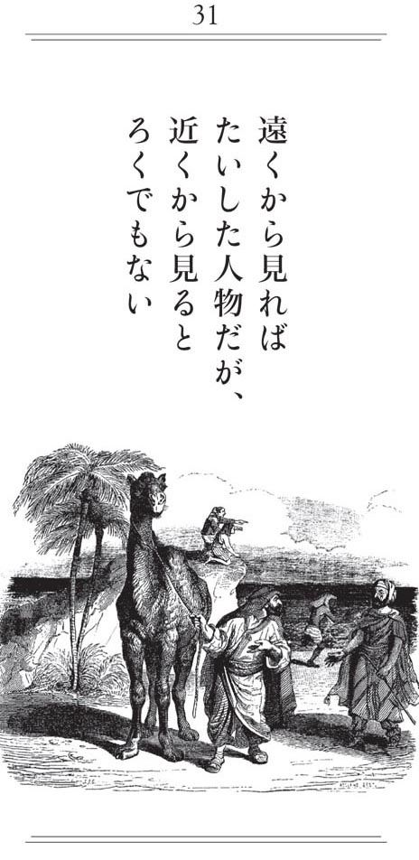

| 「悪知恵」のすすめ ラ・フォンテーヌの寓話に学ぶ処世訓 | |
| 鹿島 茂 | |
| (2017) | |
本コンテンツは紙の書籍に基づいて制作されました。
文中のページ数などもそのまま記載しております。
16 自分より臆病なやつを見つけられない者は、この世にいない
24 危険が迫っているときでも、甘美なる歌声は邪魔にならない
29 海は素晴らしいものを約束するが、それを当てにしてはいけない
30 固有名詞にうといのは地雷である。うっかり踏むと、命取り
31 遠くから見ればたいした人物だが、近くから見るとろくでもない
32 復讐は、その後の償いを秤にかければ割に合うものではない
34 手中にある一匹の魚は、いつか手に入る二匹の魚より値打ちがある
36 いったん流行が始まってしまったら、何人といえども逆らえない
40 勇気を試す本当の試金石は、差し迫った危険のうちにだけある
『イソップ寓話』というのなら、日本人の大半はよく知っている。昔から、子どもたちに人生の教訓をわかりやすく教えるという目的で、絵本や小学生用教科書に使われてきたからだ。
ところが、この『イソップ寓話』をもとにして一七世紀フランスのラ・フォンテーヌという文人が書いた『寓話』となると、岩波文庫に入っていて簡単に読めるにもかかわらず、日本人でこれを繙いたことのある人というのはほとんどいない。「ラ・フォンテーヌの『寓話』って、何、それ？」ということになる。
こうした無知は、じつは、フランス文学が専門のフランス文学者においても同じなのだ。ラ・フォンテーヌの『寓話』を原文で読んだことのある人はいうに及ばず、翻訳で読んだという人すら決して多くはない。たいていは、なんとなく知っているというレベルにすぎず、本当のところは一行足りとも読んだことはないのだ。
なぜなのだろう？ おそらく、イソップの寓話からの連想で、ラ・フォンテーヌの『寓話』も子ども向けの通俗的な教訓話と思っているからなのだろう。
しかし、実際のところ、ラ・フォンテーヌの『寓話』を一ページでも開いてみれば、それが、子ども向けどころか、大人向けの非常に厳しい認識に貫かれた人生訓の集合体だということがわかる。その冷徹ぶりたるや、マキャヴェリの『君主論』にだって負けないくらいなのだ。
それだけではない。ラ・フォンテーヌの『寓話』は、フランス人という、他の欧米人とはかなり変わった思考法をする国民のメンタリティーについていろいろなことを教えてくれる。これはフランス文学を専門とする私にとっては、恰好の教科書となる。
一つ、具体的な例を挙げてみよう。日本人ならだれもが知っている「キツネとブドウ」という寓話だ。まず、『イソップ寓話』から。
腹をすかせた狐君、支柱から垂れ下がる葡萄の房を見て、取ってやろうと思ったが、うまく届かない。立ち去りぎわに、独り言。
「まだ熟れてない」
このように人間の場合でも、力不足で出来ないのに、時のせいにする人がいるものだ。
（『イソップ寓話集』中務哲郎訳／岩波文庫）
日本人なら、ここから、負け惜しみはよくないという教訓を引き出しているはずだ。ところが、ラ・フォンテーヌの『寓話』となると、この同じ寓話から一八〇度違った教訓が飛び出してくるのである。
ガスコーニュ生まれのキツネが、ノルマンディー生まれだという人もいるが、おなかがすいて、ほとんど死にそうになっていたとき、ブドウ棚の上に、明らかに熟しきって、紫色の皮に覆われたブドウの実を見た。
ぬかりない奴は、喜んでそれで食事をしたかったのだろうが、手がとどかなかったので、「あれはまだ青すぎる。下郎の食うものだ」と言った。愚痴をこぼすよりもましなことを言ったではないか。
〔『ラ・フォンテーヌ 寓話』（巻の三 第一一話）今野一雄訳／岩波文庫〕
私は十九歳のとき、アテネ・フランセの初級フランス語の教科書でこれを読み、腰を抜かすほどびっくりした。なぜなら、イソップは負け惜しみはよくないと言っているのに、ラ・フォンテーヌは「負け惜しみこそ、精神の健康法」と説いていたからだ。そして、同時に、これ一つでフランス人の言動のほとんどが理解できたような気がした。事実、その後、フランスの地を踏んで、フランス人と接触するにつれて、ラ・フォンテーヌのこの最後の言葉こそフランス人の本質を衝いていると思った。
つまり、手が届かない富や地位を羨むのは愚の骨頂で、そんなものは「下郎の食うものだ」と馬鹿にしておけばそれでいいのである。実際、フランス人の庶民はこうした負け惜しみ思考法によって、豊かでなくとも十分に幸せでいられるのである。
しかし、そうだとわかっていても、現実にこうしたフランス式負け惜しみの実例に出合うと、日本人は少なからぬショックを味わうようだ。もう一〇年以上も前のこと。テレビで、少年少女の国際ピアノコンクールのドキュメンタリーを妻と一緒に見ていたら、フランス人の少年が準決勝まで進みながら、決勝進出の夢破れて会場を立ち去る姿が映っていた。その少年は、最後に一言、「どうせ、適当に選んだんだろう」と捨てゼリフを吐いたのである。
妻は「まあ、ひどい！」と叫んだが、私は「子どもでもフランス人！」と感心することしきりだった。
ラ・フォンテーヌの『寓話』には、フランス的な叡知と毒がつまっているのである。
クマの友情の示し方
ラ・フォンテーヌの『寓話』には、イソップを踏襲したものもあれば、ラ・フォンテーヌのオリジナル作品もある。
私が人生の教訓として、ことあるごとに引用する「クマと園芸の好きな人」（巻の八 第一〇話）はその一つである。
山奥に独りで住んでいたクマがうら悲しい生活に嫌気がさし、だれか友達ができないかと思っていたところ、ほど遠からぬ場所に、これまた無聊に苦しむ園芸家がいた。園芸家は花を友として暮らしていたが、話のできる相手がほしいと感じていたので、家の外に出てみると、同じ思いで山を降りてきたクマとばったり出会ってしまった。男は驚いたが、こういうときには下手に出るのが大切と考え、クマを自分の家に招待した。
二人はすっかり意気投合して一緒に暮らし始めた。クマは無口だったので、男は無駄話につきあわされることなく、仕事に精出すことができた。
クマはときどき狩りにも出かけたが、主な仕事は、友人が昼寝しているときに、うるさく顔につきまとうハエを追い払ってやることだった。
その日も、同じように園芸家が昼寝をしていると、その鼻の頭に一匹のハエが止まった。クマが手で追い払っても、ハエはすぐに舞い戻ってくる。クマはいらだった。
「きっとつかまえてやるぞ」とかれは言う。「そら、こんなふうにだ。」
言うやいなや実行。忠実なハエ追いは、敷石をひっつかみ、力いっぱい投げつけて、ハエをつぶすと同時に男の頭をぶちわった。
かくて、推論は下手だがすぐれた投手のクマは、男をその場で即死させてしまったものだ。
（『ラ・フォンテーヌ 寓話』今野一雄訳／岩波文庫、以下同）
フランス語では、このラ・フォンテーヌの『寓話』から発生した表現に「クマの敷石 un pavé de l'ours」というのがある。
その意味は「いらぬお節介」ないしは「ありがた迷惑」。ときとして、「不器用な男の過剰な愛情表現」などと拡大解釈されることもある。
堀江敏幸氏の芥川賞受賞作「熊の敷石」の表題も、こうしたラ・フォンテーヌの『寓話』に派生する表現から借りたものだったと記憶する。
無知な友より賢明な敵
ところで、私が非常に興味深いと思うのは、ラ・フォンテーヌがこのいかにも寓話的なエピソードを語ったあとに付け加えた教訓である。
無知な友ほど危険なものはない。賢明な敵のほうがずっとまし。
ふーむ、と唸らざるを得ない教訓ではなかろうか？
たしかに、クマのように「友のためを思って、善かれと思って」したことが、結果的に最悪の事態を引き起こすなら、それは「いらぬお節介」や「ありがた迷惑」どころか、極めて危険なこと、破滅へと通じる一本道であるとさえ言っていい。
そして、この「無知な友」というのを「愚かな身内」と置き換えると、寓話の真実性はより高くなってくる。
具体的な例として挙げられるのは、先の大戦である。
知られる通り、日本は、満州事変でも日中戦争でも、政府首脳は戦線不拡大の方針であったにもかかわらず、現地軍の独断専行によって日中戦争の泥沼にひきずりこまれ、ついには、絶対に負けるとわかっている英米との戦争に突っ走っていったわけだが、この悲劇は、日本の軍隊は世界一という夜郎自大な自尊心に凝り固まった出先機関の「善かれと思って」行った果敢な戦闘によって引き起こされたのである。
また、ラ・フォンテーヌは「賢明な敵のほうがずっとまし」と述べているが、これはその後に訪れた冷戦の時代を見るとよくわかる。米ソ両国は、互いに相手を最大の仮想敵国と見なし、戦力の増強と情報の収集に努めたが、戦争が起こった場合に相手に与える損害と自国が被る損害をシミュレーションした結果、戦争はあまりに割りがあわないと考え、最終的に自分のほうから引き金を引くことを放棄してしまったのである。米ソとも「賢明な敵」であったがために、冷戦（コールド・ウォー）は熱戦（ホット・ウォー）にならずに済んだのだ。
この例からもわかるように、ラ・フォンテーヌの言う「賢明な敵」とは正しい損得勘定ができる敵のことであり、「無知な友」とは損得の判断がつかずに、一時的な感情（正義感、友愛、etc.）に駆られて行動を起こしてしまう味方のことなのである。
げに恐ろしきは「クマの敷石」である。
「アリ派の日本人」と「セミ派のフランス人」
クレッソン元フランス首相が働きすぎの日本人を評して「日本人はアリ」だと言ったとか言わないとか、真偽のほどは明らかでないが、いかにも言いそうだという気はする。しかし、この「言いそうだ」を理解するには、日本人とフランス人ではアリの捉え方が異なっているという点を頭に入れておかねばならない。ちなみに、ラ・フォンテーヌの「セミとアリ」（巻の一 第一話）の『寓話』はこうである。
夏のあいだずっと
歌をうたっていたセミは、
北風が吹いてくると
ひどく困ってしまった。
ハエや小さな虫の
かけらひとつみつからない。
おなかがすいてたまらないので、
近所のアリの家へいって、
春になるまで食いつなぐため、
穀物を少々、
貸して、と頼む。
「取り入れまえに、きっと、
元利そろえて
お返しします。」
アリは貸すことを好まない。
貸すなんて、そんな不徳はもちあわせない。
「暑い季節にはなにしていたの。」
アリは借り手のセミに訊く。
「夜も昼も、みなさんのために、歌をうたっていましたの
すみません。」
「歌をうたって？ そりゃけっこうな。
それじゃこんどは、踊りなさいよ」
これを率直に読んだら日本人だろうと「アリって、なんてイヤな奴！」と思うだろう。いわんや、フランス人においてをや、である。それもそのはず、ラ・フォンテーヌは読者が「そのように」感じるように書いているのだ。つまりラ・フォンテーヌ的な解釈では「働かず、歌で人を楽しませるセミ」は◎で、「食糧確保のためにひたすら働くアリ」は×なのだ。フランスの元首相もこうしたラ・フォンテーヌ的解釈にならって、「働いて自分だけ豊かになりたがる我利我利亡者の日本人は許さない」と考えたのだろう。
ことほどさように、フランス人にとって「セミとアリ」の寓話は、アリを断罪し、セミを称賛するための典拠となっているのだ。「アリこそが偉い」と考える日本人とはなんという違いだろうか？ 思うにこれは、遠く、旧約聖書の「アダムとエヴァ」にまで溯る労働観である。思い出していただきたい、アダムとエヴァは蛇にそそのかされて禁断の果実を食べたために、罰として何を与えられたかを。そう「労働」である。労働は、少なくともフランス・カトリック的な考え方では、懲罰であり、苦痛なのだ。だからこそ、フランス人は、ヴァカンスをこよなく愛し、労働を「必要悪」と見なすのである。
寓話から読み取る日本人の労働観
では、フランス人とは対照的に「アリ＝◎、セミ＝×」と考える日本人の労働観は、例外的なものなのだろうか？ そんなことはない。げんに、ラ・フォンテーヌが原典と仰いだ『イソップ寓話』では、この寓話は次のように描かれているのである。
夏の盛り、蟻が畠を歩きまわって、冬の食糧を溜めこむために、小麦や大麦を集めていた。センチコガネはこれを見て、他の動物が仕事を止めてのんびりしている時に汗水流すとは、何ともしんどいことだと驚いた。
蟻はこの時は黙っていたが、やがて冬になると、餌になる糞も雨に流され、飢えたセンチコガネが、食物を分けてもらおうと蟻の所へやって来た。それに対して蟻の言うには、「センチコガネ君、私が汗水流すのをとやかく言ってくれたが、君もあの時苦労をしていたなら、今餌に困ることはなかろうに」。このように、ふんだんにある間に将来に備えない者は、時勢が変わればひどい不幸に見舞われるのだ。
（『イソップ寓話集』中務哲郎訳／岩波文庫）
この引用からもわかるように、ラ・フォンテーヌはイソップの与えた最後の教訓を「それじゃこんどは、踊りなさいよ」という嫌みなアリの言葉に置き換えて教訓をフランス的に作り替えているのである。
それはさておき、最後に、勤勉なアリに対するカウンター・パートについて考えてみよう。というのもイソップの原典ではセンチコガネだったものが、ラ・フォンテーヌではセミになり、われわれ日本人が知る日本版『イソップ寓話集』ではキリギリスになったのかはなぜかという謎が残るからだ。
まず、ラ・フォンテーヌがセンチコガネをセミとしたのは、「詩人・芸術家＝歌うセミ」を大切にしないルイ一四世の宮廷への批判があったためである。当時、詩人や芸術家は王侯貴族に寄食していたが、彼らの気分次第で糧道を断たれることもあったからだ。
では、セミがキリギリスに変わったのはなぜか？ じつは、この疑問に対しては私が『セーラー服とエッフェル塔』（文春文庫）の中で暫定的な答えを出している。
すなわち、ラ・フォンテーヌの『寓話』が挿絵本となったとき、グランヴィルを始めとする挿絵画家たちは北部フランス出身だったのでセミというものを知らず、「鳴く虫＝キリギリス」と考え、それを絵にしたのだが、それが明治の初めに日本に輸入され、その絵から「アリとセミ」が「アリとキリギリス」に変わったというもの。冒頭に掲げるグランヴィルの挿絵をとくと眺めていただきたい。この仮説の正しさがご理解いただけるはずである。
だれの心にも潜む〝ドーダ心〟
世に「ドーダ理論」というものがある。
提唱者は、漫画家の東海林さだおさんで、ドーダというのは「ドーダ！ オレ様はすごいだろう、ドーダ！ マイッタか！」のドーダからきている。東海林さだおさんは、人間の言動、とりわけ会話のほとんどは、このドーダ心の発露であり、自慢話なのであると喝破した。
たとえば、夜の銀座に流行作家が現れ、出迎えたクラブのママに「二日間、寝ていないんだ」と憮然としてつぶやいたとしても、それは「オレ様は、それくらいの売れっ子なのに、今日はそのクソ忙しい中をこうして来てやったんだから、ちゃんともてなせ」という忙し自慢ドーダなのである。また、女流作家が、自分の不幸の実況中継のような小説を書くのは、何もかも包み隠さずに告白するその正直さを自慢したいがためであり、こういうのは赤裸々ドーダという。
また、一見それとわからないような謙虚な言葉にもドーダは隠されており、最終的には、謙虚さを他人から褒められる（と思いこむ）ことで、ドーダは貫徹されているのである。
私は、だれが見ても自慢話とわかるようなドーダを「陽ドーダ」、外目にはわかりにくいが自慢話であることに変わりないドーダを「陰ドーダ」と、それぞれ命名して『ドーダの近代史』という本を書いたこともある。
それはさておき、この「ドーダ」の絵解きとして最も適していると私が考えているのが『ラ・フォンテーヌ 寓話』「ウシと同じくらい大きくなりたいと思ったカエル」巻の一 第三話である。
この話は、『イソップ寓話』から取られており、基本的な筋の運びは同じである。すなわち、ウシの立派な姿を見てえらく感心したカエルが自分もあれぐらいに大きくなりたいと思う。そこで、体を大きく膨らませ、一生懸命にウシと同じくらいに大きくなろうとする。そして、仲間のカエル（イソップ版では子カエル）に向かって、「ドーダ、これぐらいか」「いや、まだまだ」「なら、これでドーダ？」「まだダメ」「んなら、今度はドーダ？」と問答を繰り返して、おなかを膨らませているうちに、ついにおなかが破裂してしまったというもの。
身分不相応なことはするべからず
この寓話は、われわれ日本人も絵本で読んだことがあるから、みんな記憶しているだろう。ただ、そこから導かれる教訓ということになると、どういうことになるのか？
まず、身分不相応なまねっこはしないほうがいいというあたりが正解で、ラ・フォンテーヌも次のように言っている。
これと同じくらい賢くない人が世の中には大勢いる。ブルジョワはみんな大貴族のような邸宅を建てたがっている。小さな国の王さまもみんな大使をもっている。侯爵はみんなお小姓をもちたがっている。
（『ラ・フォンテーヌ 寓話』今野一雄訳／岩波文庫）
ラ・フォンテーヌにしてはおとなしいオチというほかはない。そこで、われわれは、この寓話の内容を少し変更して、こんな準・創作寓話にしてみる。
あるとき、アマガエルの子がウシの巨大な姿を見て驚き、お父さんに教えました。ところが、父さんカエルは、少しも驚かず、こういいました。
「あれはウシというもので、われわれとは違う生き物なのだよ」
「お父さん、くやしくないの？ この世にあんなに大きなヤツがいて」
「全然くやしくないね。所詮、ウシとカエルじゃ、格が違うのだからね。いいかい、近づいて踏み潰されないようにしなさい」
なかなか、ものがわかったカエルのお父さんなのでした。
ところが、別の日、アマガエルの子がガマガエルの巨大な姿を見て驚き、お父さんに教えました。すると、お父さんは、すっかりうろたえて叫びました。
「なに！ オレより大きなカエルがいるだと！ そいつは、これぐらいか？」
「もっと大きいよ」
「なら、これでドーダ？」
「まだだよ、お父さん」
「んなら、今度はドーダ？」
こうしてカエルのお父さんは、ガマカエルとの競争を勝手に始めたあげく、最後はおなかを破裂させて死んでしまったのでした。
教訓＝人は、彼我の差があまりに大きいときは無関心になるが、隣人（同僚）との小さな差には非常に神経質になり、誇りを傷つけられたり、反対に過剰なドーダを覚えるもの。
微差こそがドーダの根源なのである。
というわけで、社員の心を自在に操りたいと思う社長は、給与に数万円ではなく、数千円の微差をつけること。きっと、社員は、カエルのお父さんのように、おなかが破裂するまで、つまり過労死するまで働いてくれるに違いない。
騙される人間にだけはなるな
『イソップ寓話』の中で、日本人がよく知っているものの一つに「カラスとキツネ」というのがある。
肉を嘴にくわえたカラスが木の枝に止まっていると、キツネがこれを見つけ、肉（ラ・フォンテーヌの『寓話』ではチーズ）をせしめてやろうと思い立ち、お世辞をさかんに言う。あなたはなんて立派なんでしょう、お声が体つきに見合うくらいに見事ならば、まちがいなく森の王様になれるでしょうに、と。すると、カラスはキツネのお世辞にまんざらでもない気持ちになり、声も素晴らしいんだと嘴を大きく開き、「カァー」と大きく鳴いた。そのとたん、肉は嘴から落ちて、キツネの足もとに転がった。
このあたりまでは、絵本で読んだことがあるはずだから、日本人もよく覚えているだろう。だが、まんまと騙されたカラスに対して、キツネがなんと言ったかということになると、記憶はかなり曖昧に違いない。『イソップ寓話』で、キツネは次のように言っているのである。
「烏さん、あんたに心もあったなら、万鳥の王となるのに何の不足もなかっただろうに」
（『イソップ寓話集』中務哲郎訳／岩波文庫）
では、イソップのフランス・バージョンであるラ・フォンテーヌの『寓話』はというと、キツネはこんなことを饒舌に語っている。
「ご親切なお殿さま、覚えていることですな、へつらい者はみんな、いい気になる奴のおかげで暮らしていることを。この教訓はたしかにチーズひとつの値うちは十分」
〔『ラ・フォンテーヌ 寓話』（巻の一 第二話）今野一雄訳／岩波文庫〕
騙したキツネが騙されたカラスに向かって、「この馬鹿め、騙されるんじゃないよ！」とお説教を垂れるという構図では同じだが、ラ・フォンテーヌの『寓話』は、さらに一歩踏みこんで、キツネの言葉を一般論にまで高めている。すなわち、騙される人間にだけはなるなという、フランス独特の世間知が軽く披露されているからだ。換言すると、キツネは、カラスを騙すというかたちをとって、カラスに貴重な教訓を与えているのだが、その教訓というのは「チーズ一つ分」を損しても学ぶ必要がある大切なことだよというのである。さらに言い換えるなら、騙し騙されは、人生にとって絶対に回避できないものだから、大火傷をする前に、損害の軽い段階でペテンに引っかかって悔しい思いをしておくほうがいいということになる。
おべんちゃらになびかない人はいない!?
ただし、この寓話には「騙されるな！」という教訓のほかに、「ドーダ、オレ様はすごいだろう、参ったか！」というドーダ心がある人ほど、そのドーダ心を衝かれると、手もなく騙されてしまうという教訓も含まれている。
わかりやすい例として、カラオケ・ボックスを挙げてみよう。自分はひどい音痴だと十分に意識している人でも、おべんちゃらのうまい部下（後輩）から「イヤー、課長（先輩）、見直しましたよ。すごいじゃないですか。音痴なんてだれが言ったんです。もうプロ級じゃないですか！ もしかして、ＣＤ出してるんじゃないですか？」などと巧みにおだてあげられると、「いや、そんな、冗談じゃないよ、馬鹿なこと言うな」などと否定しながら、心の中では「やっぱり、おまえもそう思ったか。わかっている奴はちゃんとわかっているんだ」とすっかりいい気持ちになり、部下（後輩）が「どうです、課長（先輩）、もう一曲？」などとおだてあげると、「そっ、そうかい、じゃあ、あと一曲だけ」などと調子に乗ってマイクを離さなくなってしまうのである。
そういうとき、部下（後輩）のほうはきっと、キツネと同じように「覚えていることですな、へつらい者はみんな、いい気になる奴のおかげで暮らしていることを」と心の中でつぶやきながら、後ろを向いて舌を出して、一緒に来た女の子たちを笑わしているのである。
では、この教訓は果たして役にたつのかというと、おそらくは役にたたないと思う。なぜなら、世の中には、おべんちゃらを言われてうれしくない人間は皆無とはいわないが、極めて少ないからだ。西郷隆盛のような克己心の強い人でも、おべんちゃらには負けてしまうのである。
ラ・フォンテーヌと同時代の優れたモラリスト（人間性観察家）であるラ・ロシュフーコーは追従（おべんちゃら）についてこんなことを言っている。
追従はわれわれの虚栄心に俟たなければ通用しない贋金である。
（『ラ・ロシュフーコー箴言集』二宮フサ訳／岩波文庫）
つまり、われわれ全員の心の中に虚栄心（ドーダ心）がある限り、おべんちゃらは極めて有効なのであり、まことに残念ながら、ドーダ心のない人は絶対にいないのである。嗚呼！
給与生活者の特権
大学教師のかたわら物書き稼業をやっていると、かたときも頭を去らない疑問がある。
大学教師なんかやめて、フリーでやっていくべきではないか？
大学もまた競争すべしという政府の方針が出て以来、かつての象牙の塔はもはや研究・教育の場ではなくなり、完全な第三次産業（サービス業）と化している。つまり、大学は、学生という顧客に満足度を高めてもらうために切磋琢磨し、激烈な競争を生き抜かなければならない商業の一形態となり果てているのである。それはどこの大学でも基本的に変わりはなく、Ａという大学をやめてＢという大学に移ったら研究・教育に専念できるという類のものではない。日本中のすべての大学がひとしなみに第三次産業の一翼に組みこまれてしまっているのである。
そのために、大学教師の時間の大半は顧客満足度をアップするためのサービス業的な雑務に費やされることになる。お得意様（高校・予備校・日本語学校）を確保するために外回り営業を行い、宣伝・広告に知恵を絞り、受験しやすいような選抜試験の方法を考えだし、問題を作成・実施し、懇切丁寧な授業計画案を作る。そして、こうしたサービス業務全般の能率化のために無数の非能率な会議を開くのである。昔と違って、「大学教師は気楽な稼業ときたもんだ！」とはいかなくなっているのだ。
しかし、そんなに大変なら、大学教師なんかさっさとやめてフリーになっちゃえばいいじゃないかと言われると、ウーンと考えこまざるを得ない。
なぜなら、いかに激務でも、月の「決まった日」にきちんと固定給が振り込まれる給与生活者の特権というのは何ものに代えがたいからだ。フリーのつらいところは、原稿料や印税、ないしは出演料が「いつ」振り込まれるかわからないことである。家賃や光熱費、クレジット・カードの決済などの出金は「決まった日」に行われるのに、入金の日時が「フリー」であるというのはじつに困ったことなのだ。
だが、それでもフリーになるべきではないかと迷う瞬間がある。
安泰のために支払った犠牲
たとえば、ラ・フォンテーヌの『寓話』の「オオカミとイヌ」（巻の一 第五話）を読んだときだ。
オオカミが飢えで骨と皮ばかりになり、ヒツジの番をしているイヌのところにやってきた。イヌは肥え太り、脂ぎって、いい色艶をしていた。オオカミは、イヌに対してさかんにお世辞を言い、どうしたらそんなに体格よくなれるのかを尋ねた。
すると、イヌはこう答えた。
「森を去るのだ、そのほうがいい。きみの仲間はみじめなもんさ。能なし、文なし、あわれな奴で、飢えて死ぬのがその運命。なぜか。生活の保障はなし、ただのめしにはありつけず、なににつけても力がたより。ついてきたまえ、はるかにましな身分になれるよ」
（『ラ・フォンテーヌ 寓話』今野一雄訳／岩波文庫）
そこで、オオカミは「どんな仕事をするんだい」と訊いてみる。
イヌは、とくにこれといった仕事はない、物乞いにやってくる連中を追っ払うくらいで、あとは主人のごきげんをうかがっておけば、おいしい御馳走にありつけるのさと答える。
これを聞いてオオカミは感涙にむせぶが、ふと、犬のうなじに毛がないのに気づき、不審に思って理由を尋ねる。
イヌは、最初、「つまらぬことさ」と言ってはぐらかすが、オオカミがしつこく訊くので、最後は「たぶん、ぼくを繋いでおくための首輪のせいだろう」と白状する。
驚いたオオカミは「じゃあ、あんたは好きなところへ、走って行けないのか」と叫ぶ。
犬は答える。「そんなことはどうでもいい」。
これを聞くや、オオカミは「よかないよ。そんなことなら、どんな御馳走も、おれはちっともほしくはないし、そんな犠牲を払うなら、宝物だっていらないよ」と捨てゼリフを吐いて一目散に走って逃げていった。
ここで、ラ・フォンテーヌは寓話を終わらせている。だが、私はこのあとに、一人残されたイヌのつぶやきを加えてみたい。
「オオカミくんよ。君が《飢える自由》を選ぶのは勝手だ。もともとオオカミなのだからね。だが、私には養わなければならない家族がいる。家のローンがある。だから、たとえ首輪が苦しくても、首輪を外すわけにはいかないんだ。これが主人に奉仕（サービス）する動物たるイヌの宿命なのだよ」
しかし、それにしても、首輪がきつく感じられる昨今である。
動物王国の民主主義
民主党・国民新党・社民党の連立政権内部で、普天間基地問題を巡り、不調和音が聞こえるようになったときのことである。この分では、遅かれ早かれ、連立の解消、民主党単独政権の誕生という日がくるだろうと思われた。
私などは、三〇〇を超える議席をもっている党なのだから、民主党はもっと好き勝手に主張を押し通せばいいのにと思うのだが、少数意見にも目配りするという「党是」からして、そうした「民主主義」に反することはやりにくいのかもしれない。
ところで、われらがラ・フォンテーヌ先生の生み出した動物王国においても、どうやら、民主主義、連立政権主義でいこうという決議がなされたらしく、動物たちが共同で事業を始めることとあいなった〔「ライオンと共同で事業をした牝ウシと牝ヤギと牝ヒツジ」（巻の一 第六話）〕。共同事業に参加したのは、牝ウシと牝ヤギと牝ヒツジという三頭の心やさしい牝の動物、それに近在の殿様である牡ライオンだった。共同事業ということで、儲けも損もすべて分け合うという約束がなされた。もちろん、ラ・フォンテーヌは書いてはいないが、出資金も等分だったのだろう。
共同事業の内容はというと、これが森に罠を張ること。共同で分け合うのは、罠にかかった動物の肉ということとなった。牝ウシと牝ヤギと牝ヒツジが、罠にかかった動物の肉を食べるというのも変な話だが、寓話なのだから、リアリズム無視には目をつぶることにしよう。で、とにかく、ある日、牝ヤギがしかけた罠に一頭のシカがかかったので、牝ヤギは成果をみんなに知らせてやった。その結果やいかに？ 民主主義、連立政権は維持できたのか？
みんながやってくると、ライオンは、ほかの三頭を威嚇するように、爪をニューっと出して、その爪で同志の数を数え、「われわれは四匹で獲物を分ける」と宣言した。この言葉に一同はホッと胸をなでおろした。「ライオンさんて、見かけによらず民主的だったんだわ。これなら、共同事業もうまくいくかも」と再評価したことだろう。
実際、期待通り、ライオンは鋭い爪でシカの肉を四等分に切り裂いた。
そして、そのうちの一つを「殿様」の資格として自分のもとに引き寄せると、おもむろにこう宣言した。
「これはわしのものだ。その理由は、わしがライオンという者だからだ。それにはだれも文句はあるまい」
（『ラ・フォンテーヌ 寓話』今野一雄訳／岩波文庫、以下同）
たしかに、だれも文句はなかった。四匹の共同経営者の一匹だったから、たとえ資格がどうあろうと問題ではなかった。四分の一の権利はだれにでもある。三匹の牝は、次はいよいよ自分の番だと思った。
絶対的な強者の権利
ところが、ライオンは次にこう言い放ったのである。
「二つ目も、権利によって、わしのものになる。その権利とは、おまえらも知っている、強者の権利だ」
三匹はガックリしたが、まあ言われてみれば、「強者の権利」というものも、世の中を太平に保つためには認めざるを得ないかもしれない。強者が盾となって自分たちを保護してくれていることもあるからだ。そこで、三頭の牝たちは大幅に譲歩することにした。いくらライオンでも、要求はここらで終わるだろうと思ったからである。だが、終わりではなかったのである。
「いちばん勇気のある者として、わしは三つ目を要求する。おまえらのだれかが四つ目に手を出したら、わしはすぐにそいつを絞め殺してやる」
さて、この教訓から、われわれは何を学べばいいのだろうか？
強者慣れしていない民主党も、いずれは強者の権利を振り回すようになるということか？
そうではない。じつは民主党こそが三匹の牝の動物のほうで、ライオンは別にいるということなのだ。では、ライオンとはだれか？ もちろん、アメリカである。
鳩山・民主党の最大の誤解はオバマ・民主党が、自分たちと同じ「友愛」を原則にする同名の党だと思いこんでいたことである。つまり、鳩山・民主党は、極東の集団安全保障という「共同事業」を「対等」の資格で行っていると思いこんでいるらしく、普天間基地問題でも「対等」に話し合うつもりだったようだが、これは余りにも甘い考え方だ。オバマだろうと、世界最強の国・アメリカの大統領だ。ライオンと同じように、まず、「ライオンという殿様」の権利、次には「強者の権利」、さらには「いちばん勇気のあるものの権利」という具合に、次々に沖縄交渉を有利に進め、最後は「四つ目に手を出したら」絞め殺してやると宣言して、普天間基地よりもはるかに都合のいい基地をせしめるに違いない。
ライオンと闘うには民主主義ではダメなのだ。では、何が必要なのだろう？ 答えは次章。
老齢な権力者の猜疑心
ライオンと闘うには、どうしたらいいのだろう？
ライオンとそれ以外の動物のように、彼我の力の差が大きすぎる場合には、「みんなが力を合わせて」とか「話し合いで」とかいった民主主義的な奇麗事で済むわけがない。かといって、革命やクーデターが成功する可能性は限りなく小さい。それは、スターリンや毛沢東などのような独裁者の恐怖の呪縛から国民が解放されるには、彼らの死を待ち続けなければならなかったことからも明らかである。ライオン（独裁者）が元気なうちは、まったく打つ手がないのだ。
だが、ライオンが老齢に達したり、病気がちになったりすると、弱虫な臣下でも、「もしかすると」という希望が湧いてくる。しかし、本当に危ないのは、じつはこのときなのだ。年老いたり病気になったライオンというのは、弱気にもなるが、猜疑心もいっそう強くなるからだ。しかも、その猜疑心は身近な者に対してより強烈に働くので始末が悪い。死の直前に、ユダヤ人侍医団の粛清を用意していたスターリンが良い例である。
ラ・フォンテーヌの『寓話』の動物王国でも、ライオンが洞窟の中で病に倒れ、百獣の王の名において、臣下たちに見舞いの使者を送るようにという命令が下された。王令には、手厚いもてなしが確約され、ライオンの牙と爪に対する安全保障がはっきりと謳われていた〔「病気のライオンとキツネ」（巻の六 第一四話）〕。
この王令を読んで、ほとんどの動物たちがライオンへの使者を送ることに決めた。さすがのライオンも病気になったので、臣下たちに優しくなったのだろうと思ったのである。
ところが、そんな中、キツネ族だけは、だれ一人として見舞いに出かけることもなく、家にひきこもったままだった。不思議に思った別の臣下が理由を尋ねたところ、一匹のキツネがこう答えた。
「病気のライオンを見舞いに出掛けた連中の足跡をよく調べると、みんな例外なく、ライオンの洞窟のほうに向かっているではありませんか。ところが、洞窟から出てきた足跡は一つもない。これは用心しなくてはならない兆候ではないでしょうか？ というわけで、わたしは陛下にはせつに御容赦のほどをお願いいたすことにしたのです。『まことに、安全保障と褒賞の確約はかたじけない限りではございますが、一つだけ、どうにも解決できない疑問がございますので、お見舞いはその疑問が解けてからにいたしたいと思っております。陛下の洞窟は、入り方はわかっても、どうやって出てくればいいのかが皆目見当がつきません。どうか、ものわかりの悪いわたくしめのために、嚙んで含めるようにそのわけを説明してはくださいませんか』とね」
（筆者による意訳、以下同）
おいしい話は信じるべからず
この寓話から引き出される教訓とはどんなものだろう？
一つは、ライオン（権力者）の言う「おいしい話」は簡単には信じるなということである。権力者が、自ら進んで権力の一部を放棄するなどということは、まず、絶対にあり得ない。会社の社長なり会長が、権限を部下に委譲したいなどと言い出したときには、よほど眉に唾をつけてかからないといけない。とくに代表権をもつＣＥＯのままでの権限委譲は要注意である。「おまえは権限が委譲されたのをいいことにこれを乱用したからクビ！」などと言い出しかねないからである。
もう一つは、ライオン（権力者）というのは、病気になったり老いを自覚したときこそ、臣下の忠誠を試そうとする傾向が強いので、こうしたときには、熟慮に熟慮を重ねなければならないということだ。忠誠を示すために率先して見舞いに出かけたがために命取りとなるケースもなきにしもあらず。猜疑心の塊となったライオンというのは、どんなに誠意を込めた忠誠表示でも、そこに噓を見てしまうものなのだ。
だが、果たして、キツネのように、見舞いには出かけないときっぱり決断していいのかというと、私はそうも言い兼ねると思う。病気だったはずのライオンが急に元気を回復し、見舞いに来なかった者へ猛烈なる復讐を開始する可能性もあるからだ。
というわけで、最後にとるべきは「丁半の両方に張っておく」という和戦両様の構えしかないことになる。捨て駒にしていいメンバーだけを見舞いに送り、他の精鋭は残して籠城を決めこむという、徳川家康的方策である。
しかし、これとて絶対的に安全な方法ではない。
というわけで、ライオンが相手の場合、絶対確実なのは、「死ぬまで待つ」、これしかないのである。
そう、毛沢東の死をひたすら待ち続けたという鄧小平のように。
強い者の理屈はつねに正しい
渋沢栄一は、幕末に徳川昭武の随行としてパリ万国博覧会に赴いた親仏派の経済人であったが、息子の渋沢秀雄があるとき「当時覚えたフランス語で記憶に残っているものはありませんか？」と尋ねたところ、《La raison du plus fort est toujours la meilleure》と流ちょうなフランス語で答え、「ほかは全部忘れたが、なぜかこれだけは覚えている」と付け加えたという。よほど耳の記憶がよかった人だったに違いない。
ところで、直訳すれば「最も強い者の理屈はつねに最も正しい」ということになるこの諺、ラ・フォンテーヌの『寓話』「オオカミと小ヒツジ」（巻の一 第一〇話）の冒頭に掲げられているものである。
ラ・フォンテーヌがそれを証明する例として持ち出してきたのは、オオカミと一匹の小ヒツジの話である。
澄んだ小川のほとりで、一匹の小ヒツジがのどの渇きをいやしていた。そこに、腹がへって機嫌が悪くなっていたオオカミがやってきて声をかけた。
「おい、小ヒツジ、なんで貴様はおれの飲み物を濁らせたりなんかするんだ。図々しいやつだなあ。そんなまねをすると承知しないぞ」
すると、小ヒツジが答えた。
「何とぞ、お許しくださいませ。わたしが水を飲んでいるのは、あなた様よりも二〇歩も川下の場所。あなた様のお飲み水を濁らせたりなんかいたすはずはございません」
「いいや、貴様はたしかに水を汚している。それに、貴様が去年、おれの悪口を言っていたのを知っているんだぞ」
「そんな、めっそうもない。去年なら、わたしはまだ生まれてもおりません。わたしはまだ母親の乳を吸っている子どもなんです」
「なにぃ、生まれていなかっただと！ なら、悪口を言ったのはおまえの兄貴だ」
「私には兄はおりません」
「そんなら、おまえの身内のだれかだ！」
とにかく、オオカミはなんでもいいから因縁をつけてやろうと待ち構えているのであるから、これに理屈で対抗しようとしても、それは無駄な努力なのだ。どちらが正しい正しくないよりも以前の問題、つまり力関係で「正誤」は決まってしまっているのである。
かくして、オオカミは、次のような超論理的な理屈を持ち出して、こう言い放つことになる。
「いいか、おまえたちヒツジは、おれが嫌いだそうじゃないか。ヒツジも羊飼いも牧羊犬も、みんなおれのことが大嫌いなんだ。とにかく、おれは、そう聞いている。だから、おれとしては、ここで自らの屈辱を晴らし、かたきを取らなくちゃいけない、と、こういうことになるわけだ」
そう言うが早いか、オオカミは小ヒツジにガブリと嚙みつくと、そのまま森の奥に連れていって、ムシャムシャと食べてしまいましたとさ。
というわけで、「最も強い者の理屈はつねに最も正しい」となるのである。
「日本小ヒツジ論」の事実
ところで、こうした「強者の論理」論に対しては、それは冷戦構造時代の旧弊なパワー・ポリティックス論であり、民主主義が世界中の国で指導原理となっている二一世紀には、かならずしも通用するものではないという議論があるかもしれない。
たしかに、話を軍事力に限るなら、そうした議論にも一定の真理はあるかもしれない。
二〇世紀のように、大国が力任せにほしいままに侵略するということは許されなくなっているからだ。
しかし、現代における「最も強い者」というのは、かならずや「最も金のある者」と重なるという事実を忘れてはならない。「最も強く、最も金がある者」は、どこにいっても負けることを知らないのである。
この教訓は、先頃、コペンハーゲンで開かれた国際環境会議ＣＯＰ15においても十分、その正しさが証明された。アメリカと中国という「最も強く、最も金のある者」の理屈の前には、日本やＥＵなどの掲げるＣＯ２の二五パーセント削減などという理想論は、小ヒツジの弁明と同じくらいにぜい弱で、簡単にひざを屈するほかなかったからである。この二つの国、とりわけ中国には金があるので、発展途上国に対し、力を誇示するついでに金もバラまいておけば、確実に票のカウントができたのである。
対するに、かつては「金なら持ってんぞー」と豪語し、「何ごとも金で解決」を旨としていた日本はといえば、もはやオオカミではなく、小ヒツジの仲間入りの惨状である。デフレ進行とあいまって、「日本小ヒツジ論」が出てきそうな状況になってきた。情けない限りである。
カシの木とアシ
その昔、「小さな親切」運動というものがあって、マスコミなども好んで取り上げていたと思うが、私などはその頃からひねくれていたから、「小さな親切、大きなお世話」と嘯いて、この運動の根底にあるお節介精神を揶揄していたものだ。たとえ小さなものでも、他人に親切を施してやろうというその心の中には、自分の優越感を確認したいというさもしい根性、われわれの用語でいうところの「ドーダの心」が存在していて、これが鼻についてならなかったからである。
ところで、世の中、どんな場所にもどんな時代にもこの「お節介精神」に富んだドーダの人はいるもので、ラ・フォンテーヌ描くところの自然界にもカシの木というお節介の権化のような奴がいた〔「カシの木とアシ」（巻の一 第二二話）〕。このカシの木が、あるとき、湿原で揺れるアシを見て、同情にたえないというような顔をしながらこう語りかけた。
「君は本当に気の毒な植物だね。さぞや創造者たる自然を恨んでいるんだろうが、まあ、それも当然だろう。だって、君は一羽の小さなミソサザイがとまっただけでも、えらく負担に感じるだろうから。それどころじゃない。気持ちのいい微風が吹いて水面にさざ波を立てても、君は頭をたれなきゃいけないだろうね。かわいそうに。
それに比べると、このわたしは、ドーダ、すごいだろう、と言いたいね。額はコーカサスの山の如くに高く聳え、太陽の光も遮っている。それどころか、激しい嵐に遭ってもびくともしない。君にとっては、どんな微風も北風に感じられるだろうが、私にすればどれほど激しい風もみんな心地よい春風みたいなもんだ。
せめて君が、私の木陰に生えて、このあたり一帯を覆っていたらよかったのに。嵐がきても、そのときには、私がしっかりと守ってやるからね。だが、やんぬるかな、君たちは好んで吹きっさらしの湿原のほとりに生えてばかりいる。ほんと、自然は君たちにたいして無慈悲だと思うよ」
すると、風にそよぐアシは毅然としてこんなふうに答えた。
「同情していただいてありがとう。たぶん、お言葉は親切な気持ちからきているのでしょうが、そういうご心配は無用です。風は、あなたのような方には恐るべきものかもしれませんが、私にとってはそれほど怖いものではないんです。だって、私は、たしかに《しなる》ことはあるかもしれませんが、絶対に折れないからです。あなたは、これまでのところ、恐ろしい風の攻撃に耐えてきたようですが、これから先も同じだとだれが保証してくれるのでしょうか？」
アシがこう言うか言わないかのうちに、一天にわかにかき曇り、地平の彼方から猛烈な北風が吹いてきた。北の空がそれまでにはらんだ中でもいちばんの暴れん坊だった。
しかし、カシの木は敢然とこれに立ち向かい、雄々しげに仁王立ちした。いっぽう、アシはたちまちのうちにしなって、巧みに身をかわした。
しかし、風は勢いを増し、カシの木に吹き付け、ついに根こそぎにしてしまった。頭は天に届き、足は黄泉の国にふれていたあのカシの木を。
アメリカ人にとっての幸福はどこへ？
さて、話を現代に戻し、この寓話を現代に当てはめるのに最もふさわしいサンプルはと探すと、それは、アフガン戦争、イラク戦争を始めたはいいが、どうやって終えたらいいのかわからぬまま迷走を続けるアメリカということになる。
アメリカは、アフガニスタンやイラクがタリバーンやフセインに独裁的に支配されているがために民衆は貧困と悲惨を抜け出せないでいると勝手に思いこみ、民主主義の素晴らしさと物質文明の恩恵を施してやろうと砂漠の真っ只中をしゃにむに突進していったが、アフガニスタンやイラクの民衆は別に民主主義や物質文明をありがたいとなど感じていないから、こんなものをプレゼントされても少しもうれしいとは思わない。迷惑に感じるだけである。たしかに創造主たる自然は無慈悲で、ろくな作物も採れず、外貨獲得のための資源は石油くらいしかない（アフガニスタンはそれもない）が、だからといって、アメリカの民衆に比べて自分たちの幸福度が劣ると感じたことはない。アメリカ人の幸福感は金（マネー）の多寡で決まるが、自分たちの幸福感はマネーとは関係がないからだ。「マネーの不足」という嵐は、アメリカにとっては恐怖かもしれないが、自分たちにとってはそれほど怖いものではない。アシの穂が「しなる」ことができるように、自分たち砂漠の民は「自給自足」という究極の〝対窮法〟を知っているからだ。
アフガニスタンやイラクの民衆が本当にこうつぶやいていたかどうかは定かではないが、とにかくそうしているうちに、サブ・プライム・ローンの破綻に端を発する「マネーの不足」という前代未聞の大嵐が世界を襲い、アメリカというカシの木はもろくも根こそぎにされてしまったのである。オバマの登場をもってしても立ち直りは期待できない。カシの木という「生き方」自体が吹き飛ばされてしまったのだから。
ギリシャ財政危機の背景にあるもの
ギリシャが財政危機に陥り、ユーロ圏の他の国々が救済に動き出したというニュースが流れたが、当のギリシャ国民は案外呑気で、ユーロ圏に入っているのだから他の国がなんとか援助の手を差し伸べてくれるだろうと考えている。つまり「財政破綻からハイパーインフレへ」という最悪コースは回避できるだろうとみんな思っているのだ。いかにも南の国らしい楽天的な考え方だが、現実には、ギリシャ国債はすでにかなりの金利上昇を見ており（つまり価値が暴落しているということ）、ハイパーインフレは目前に迫っている。
このギリシャの財政危機は、国会議員たちが利益誘導に走り、身内の人間を公務員に雇ったり（じつに労働人口に占める公務員の率が四割！）、脱税行為に甘い処置を取ったりしたこと、つまり政府のモラル・ハザードが直接的原因だが、間接的には、長い間、国民が政治に無関心で、与党の差し出す目先の利益に飛びついて、危機が顕在化するまで財政のアンバランスを放置したことが最大の原因だとされている。つまり、国民の危機感の薄さが今回の悲劇を招いたのである。
これと同じことが、ラ・フォンテーヌの『寓話』の動物王国でも起こっている。「ツバメとスズメ」（巻の一 第八話）の寓話である。
多くの国を旅して豊かな経験を積んだ一羽のツバメがいた。嵐が起きると感知するや、風が吹きだす前に船乗りたちに知らせてやるなど、予言者としての働きは鮮やかだった。
あるとき、一人の農夫が畑に麻の種をまいているのを目撃したので、これは大変なことになると思い、スズメたちに警告することにした。というのも、成長した麻からは、スズメたちを一網打尽にする網や罠が作られるはずだからである。
ツバメはスズメたちにそのことを説明し、あの農夫の手がまいている種こそ君たちの破滅の原因となる、だから、いますぐ種を食べてしまえとけしかけた。
ところがスズメたちはツバメをあざ笑った。なぜなら、麻の種など食べなくとも、野原に餌はいくらでもあったからだ。
やがて、麻の種が成長し、畑が緑色になると、ツバメは重ねて警告した。「いまなら、まだ間に合う、あの畑の草を一本一本みんな食べてしまいなさい。そうしないと、ひどい目に遭うから」。
だが、スズメたちは「何を予言者ぶって、あの畑の草を食べ尽くせなんてとんでもないことを言う。仲間が一〇〇〇羽もいなくちゃ、そんなことできるはずがない」と相手にしなかった。
日本にもしのびよる破綻の影
麻がすっかり生えそろい、立派な繊維を提供する準備ができてしまうと、ツバメはすっかり諦めながらも、なお一縷の希望にすがってスズメたちにこう勧告した。
「まずいことになってしまった。種まきが終わり、麦のほうが一段落したら、農夫たちは麻の繊維で網や罠を作るはず。だから、こうなったらもうしかたがない、野原を飛び回ったりしないで、家に引っこんでいるか、さもなければ住むところを変えなさい。わたしや、カモやツルやシギと同じように。でも、君たちは、砂漠や海を越えていくことはできない。だから、できるのはただ一つ、どこかの壁の穴に潜んでいることだ」
しかし、この期に及んでも、スズメたちは危機感を覚えなかった。ガヤガヤと騒ぐだけで、何一つ決めることはできなかった。
それは、ギリシャ軍が攻めてくることを予知したトロイ王女カッサンドラが攻撃を予言したにもかかわらず、トロイの民がただ立ち騒ぐだけに終わったのとよく似ていた。
かくして、ツバメの警告は現実となった。スズメたちは麻から作られた網や罠で一網打尽にされてしまったのである。ラ・フォンテーヌの教訓はこうである。
私たちは本能に耳を傾けるにしても、それは自分たちの本能にだけ。わが身の不幸は、それが本当にやってきたときでなければ信じないものである。
さて、この教訓、ギリシャばかりか、わが日本国にも当てはまる。バブル崩壊以来、繰り返された財政出動で、多額の税金が公共事業に費やされたが、景気回復のカンフル剤になるどころか空しくどこかに吸い取られ、税収が増えることはなかった。その結果、増税以外に道はなくなったが、政治家も国民もそれほどに危機を感じず、赤字国債に頼り続けた。あげく、自民党政権は崩壊、民主党の天下となったものの、「増税なき財政再建」などという夢のようなことを言っているうちに、財政赤字は膨らみ続けた。そして今日、自民党の「王政復古」が成ったものの「アベノミクス」で赤字国債大増発である。ギリシャは助けてくれるドイツがいたが、日本にはドイツはいない。その運命はより過酷なものとなるだろう。
日本でもこうした予言をするツバメには事欠かなかった。だが、国民は信じなかった。スズメのように。赤字国債という自ら編んだ麻縄に捕らえられるまでは。
だれがネコの首に鈴をつけるのか
「総論賛成、各論反対」という言葉がある。
民主党政権下で話題になった「事業仕分け」を例にとりあげてみよう。民主党はマニフェストで、公益法人の事業に無駄に支出されている税金をカットすれば、子ども手当などで増える支出分は十分確保できると主張した。
これが「事業仕分け」の発想である。「原則的」には、この「仕分け」に反対する者はだれ一人としていない。野党の自民党でさえ賛成だったはずである。つまり、公益法人に天下った役人が税金を無駄食いしていることは明らかなので、「仕分け」が必要という「総論」ではだれにも異論はないのである。
だが、その「総論」が具体的に、個別に実施されるとなると、とたんに、民主党内部からさえ批判が続出することになった。政権党となった民主党にはすでに族議員と呼ばれる業界団体や各省庁と結び付きの深い議員が生まれているから、具体的な痛みをともなった「仕分け」という「各論」には反対するのである。
ラ・フォンテーヌ先生描くところのネズミたちの世界でも、この「総論賛成、各論反対」は観察されていたようである（巻の二 第二話「ネズミの会議」）。
では、ネズミたちにとって、だれにも異論がない「総論」とはなんだったのだろうか？ 天敵たるネコのロディラルデュスと戦うための方法である。
暴れ者のロディラルデュスのおかげでネズミたちは大損害を被り、わずかに残った者も穴から出てゆく勇気がなくなってしまった。その結果、食糧が底をつき、いよいよ方策を講じなければどうしようもないというところまで追い詰められた。
そこで、ロディラルデュスが天井裏の高いところで奥方と乱痴気騒ぎを演じているとき、残ったネズミたちが片隅で会議を開き、当面の緊急問題について協議を重ねた。
冒頭、議長となったネズミがロディラルデュスの首に鈴をつけてはどうか、それもできるだけ早急に、と発言した。こうしておけば、ロディラルデュスが戦争を仕かけてくるとき、すぐにそれとわかるので、ネズミたちは床下に潜って難を逃れることができる、と。会議に集まったネズミたちは全員これに賛成した。たしかに、これ以上に効果的な方法はないように思えたからだ。
しかし、ではどうやって、だれが鈴をつけにいくかということになると、議論は紛糾した。
損な役割を引き受ける議員はいるか？
一匹のネズミが言った。「わたしは行かない。行けばロディラルデュスの餌食になるのは目に見えている。そんな馬鹿なことはしない」とはっきり意思表示した。
もう一匹のネズミも言った。「わたしは行ってもいいとは思う。しかし、残念ながら、わたしにはその能力がない」と無能力を言い立てた。かくして、何一つ決まることなく会議は散会するほかなかった。
さて、以上は、われわれもよく知っている『イソップ寓話』と同じである。
では、ラ・フォンテーヌ先生がここから引き出した教訓はというと、おおよそ次のようなものである。すなわち、
わたしはこのネズミの会議と同じように無駄に終わった会議をたくさん見てきている。議論するだけなら、意見を出す人間はたくさんいる。だが、いざ実行が問題となると、自分が引き受けようという人は一人もいなくなる。
これは、洋の東西を問わず観察される真実だが、しかし、フランスに関してはことのほかこの傾向が強い。どこの国民よりも議論が好きなのだが、個人主義的傾向が極端に強いので、自己犠牲の精神は存在しない。第三共和制と第四共和制はまさにこうした百家争鳴のうちに崩壊したのである。
だが、ときとして、自己の全責任をかけて、非常に損な役割をあえて引き受けようという人が現れることがある。
たとえば、シャルル・ド・ゴールである。
ド・ゴールはアルジェリア戦争がにっちもさっちもいかなくなった最終局面に、アルジェリア独立反対派の期待を一身に担うかたちで登場し、アルジェリア総督府のバルコニーで演説して「君たちのことは理解した」と叫んだ。アルジェリア独立反対派はこの言葉でド・ゴールは味方だと解釈し、狂喜したが、実際にド・ゴールが決断したのは、アルジェリアの独立であり、これによって、差し迫った内戦の危機は見事に回避されたのである。まさにネコの首に鈴をつけたのだ。
ひるがえって日本の政権党を見てみると、ド・ゴールに当たるような人物が出てくるとはとうてい思えない。ネズミの会議と同様、結論なしの散会に終わるほかはなさそうである。
〔後記〕
事実、そうなって「事業仕分け」というのは、あれはなんだったのか、ということに終わった。
ライオンに勝利したブヨ
アメリカのベトナム戦争と旧ソ連のアフガン戦争が残した大きな教訓というのは、どれほどの軍事大国であろうと相手にゲリラ戦をやられたら最後、絶対に勝てないということである。
第二次大戦までの正規軍同士の「会戦」型の戦争なら、敵を殲滅したついでに戦闘員・非戦闘員の別なく皆殺しにして、領土を占領してしまえば、それでケリはついた。
ところが、原爆という究極兵器が登場し、しかも、これが究極兵器であるがゆえに禁じ手となって以来、こうした皆殺し型の戦争は不可能になってしまった。そこで、限定兵器による局地戦を繰り返すほかはなくなったのだが、これだと、永遠に「終戦」はやってこないことになる。
朝鮮戦争で見え始めたこの兆候はベトナム戦争で明らかになり、旧ソ連のアフガン戦争で歴然たるものとなり、現在もなお続いているアフガン・イラク戦争でだれが見ても明々白々たるものとなった。しかし、ではゲリラ戦で侵入者を撃退した国に完全なる勝利と平和がもたらされたのかというと、こちらも首をかしげざるを得ない。敵がいなくなったとたんに内戦が起こり、こちらも完全なる勝利者が出ないままに泥沼化するからである。
もはや、どんな戦争だろうと、どちらの側にも勝利者は存在しなくなったのである。
このことを予感させるラ・フォンテーヌの『寓話』が「ライオンとブヨ」（巻の二 第九話）である。
ある日のこと、いつまでもうるさくつきまとうブヨにライオンが怒りを爆発させて怒鳴った。「立ち去れ、虫ケラ、大地の滓め」。
すると、意外なことにこの侮辱にブヨが逆上して宣戦を布告した。「百獣の王だというが、オレ様は怖くなんかないぞ。ウシはおまえより大きいが、オレの思いのままだ。いまに見ておれよ」。
そして、言うが早いか攻撃を開始した。大空高く舞い上がったかと思うと急降下してライオンの頸を痛撃した。ライオンは狂わんばかりに吠えたて、泡を吹き、目を見開いて威嚇した。おかげで近くにいる獣たちは恐れおののいて避難したが、しかし、ブヨの健闘精神はいささかもひるむことなく、第二波攻撃にとりかかる。背中を、鼻づらを刺しまくる。そして、あろうことか、鼻孔の奥にまで入りこみ、好きなだけ鉾を差しこむ。
ライオンの怒りと痛みは頂点に達し、爪と歯を剝き出しにして暴れまくるが、その強力な武器はいたずらに自分を傷つけ、血だらけにしただけだった。やがて、ライオンはひどい狂乱に襲われて、疲れ果て、降参の合図を送るはめになる。
ブヨは誇らしげに鉾を納め、勝利のラッパを吹き鳴らしながら自分の栄光をほうぼうに知らせに行こうとする。その途中、目に見えなかったクモの糸に引っかかり、哀れ、待ち伏せしていたクモにむさぼり食われてしまう。
恐るべきは、小さな敵
では、この寓話から、われわれはどんな教訓を引き出したらいいのか？
ラ・フォンテーヌ先生は言う。教訓は二つある。
一つは、最も恐るべき敵は、ときとして最も矮小な敵である、ということ。もう一つは、大きな危険を免れることができた者がつまらぬことで身を滅ぼすことがある、ということ。
この教訓は大切だ。
たとえば、日本とアメリカである。日本を完膚無きまでに叩きのめしたと思いこんだアメリカは、日本をブヨ扱いにして、哀れみから物欲資本主義の方法を貸し与えたが、それから三〇年後には、叩きつぶしたはずのこのブヨに足をすくわれることになる。一九九〇年のバブル崩壊まで、日本の改良型物欲資本主義というブヨは確実にアメリカというライオンを衰弱させ、敗戦による屈辱をある程度は雪いだのだ。
だが、その改良型物欲資本主義も少子高齢化という「つまらぬこと」で身を滅ぼすことになる。内需拡大のスローガンのもと、「面倒くさいことは嫌いだ」という日本人の安易な精神をくすぐり、面倒くさいことはしなくていいよ、その代行をしてやるからと囁き続けたため、日本人は見事に面倒回避主義のドツボにはまりこんだのだ。
すなわち、日本人は、結婚、出産、子育てという最も面倒くさいことをいちばんに嫌い、独身で自分の好きなモノを買い続ける生活を選んだ結果、少子高齢化というクモの糸を招き寄せてしまったのである。
ブヨはライオンに勝ったが、調子に乗りすぎたために自滅した。成功が失敗の原因。よくあることである。
借りた部屋を返さない牝イヌの話
大陸では、動物は極大化するか極小化することでサバイバルの道を探るといわれる。真ん中のサイズではテリトリーや食糧調達で競合するライバル種が多く、最後まで生き残るのは困難なのだ。このように、大陸では「弱肉強食」がすべてを決する第一原理であり、自分と家族以外はみんな敵となる。
いっぽう、日本のような島国では、捕食のサイクルがかなり固定されているので、真ん中のサイズにいても競合する他の種が少ない。その結果、島国では、逆にＭサイズに留まることこそがサバイバルに通じる道となり、他と摩擦を起こさないで融和を保つことが第一原理となる。
では、こうした食物連鎖が安定し、閉じられている島国に外部から捕食動物が侵入してくるとどうなるのか？
かつて話題になったブラックバスや嚙みつき亀のように、猛烈なる攻撃精神を持つこれらの生物はまたたくまに在来種を駆逐して、そのテリトリーを占有するに至るはずである。
ラ・フォンテーヌ先生の描く『寓話』の動物世界でも、こうしたブラックバスや嚙みつき亀のような攻撃精神を持った牝イヌがいた〔「牝犬とその友達」（巻の二 第七話）〕。
だが、この牝イヌ、新しい土地で地理不案内だったのか、産期が近づいたにもかかわらず、子どもたちをどこで産んだらいいか見当がつかず、非常に困惑していた。しかしそのうちにやっと一人の知人を見つけ、その知人から、 留守の間だけ小屋をまた貸ししてもらう約束を取りつけたのである。
やがて出産も無事終わったので、牝イヌは小屋を出ていかなければならなくなった。だが、急に家族が増えたので、なんとか小屋の返還を先延ばしにできないかと思い始めた。子どもたちは歩けるか歩けないかの段階だから、せめて家族揃って餌を探しにいけるようになるまで二週間だけ待ってほしい。こう懇願したのだ。
知人は困ったなと思いながらも、いたいけな子どもたちの姿を見ては、期間の延長に同意せざるをえなかった。
それから二週間たって、約束の明け渡し期日が到来したので、知人は小屋の返還を求めにやってきた。自分の部屋もベッドも牝イヌ一家に貸してしまっていて、不自由をかこっていたからである。
「すいませんけど、期日がきたので、小屋を返してはいただけませんでしょうか」
「なんだって、返せだって？ 見ればわかるでしょうが。子どもたちもすっかりここが気に入っているんだから返せるはずがないでしょう。どうしても返せというんなら、わたしたちを力ずくで追い出してみなさいよ」
牝イヌが自信たっぷりに言うだけあった。子どもたちはすでにこわもての猛犬に育っていたのである。
日本人は生き残れるのか？
というわけで、この寓話からラ・フォンテーヌ先生が引き出す教訓は次の如くである。
性格のよくない人に何か与えると、人は必ず後悔する。
彼らに貸したものを取り戻そうとすると、どうしても力に訴えざるを得なくなる。
つまり訴訟を起こしたり、係争したりしなければならないのだ。
彼らを家に一歩踏みこませると、すぐに四歩入りこんでくる。
さて、こうしたラ・フォンテーヌ先生の教訓を現代のわれわれはどのように生かしたらいいだろうか？
今後、人口の少子化で不可避となった労働力不足を補うために移民に頼ろうという議論が出てくるだろうが、その際には、この寓話が多少は役にたつのではないか？
というのも、同じ黄色い膚の人種でありながら、島国国民と大陸国民は、先に述べたように、サバイバルの方法・原理が違うから、同一場所の占有合戦となったら、あらゆる所で摩擦が生ずるはずだからである。そして、その摩擦の現場においては、弱肉強食を第一原理とする大陸国民のほうが強いに決まっているのだ。
真ん中に一塊になる傾向の強い日本人という在来種。この「可憐な花」がアグレッシブな外来種に駆逐されなければいいのだが。
杞憂であることを強く望みたい。
他人の真似をした愚か者のロバの話
人間、他人がいい思いをしていると知ると、真似をしてみたくなるのがつねである。
ＦＸで大儲けをした主婦がいると聞けば、ＦＸがどんな原理で動いているのかも理解できないのに「わたしも一丁」と考えるし、整理ポスト株の売買で一発当てたと知人が自慢していると次の日から日本経済新聞を購読し、ネット証券に株取引口座を開いたりする。
とにかく、他人に起こった奇跡のような儲け話が自分にも起こらないはずはないと考えるのだ。自分との条件の違いというものを一切無視して......。
バブル期には、出入りの植木屋さんや造園屋さんまでが株やゴルフ会員権の話をしていたと記憶する。彼らはその後、どうなったのだろうか？ うまく勝ち逃げできたのだろうか、それとも、火傷では収まらず、一家離散にまで突き進んでしまったのか？
ラ・フォンテーヌの『寓話』の「海綿を背負ったロバと塩を背負ったロバ」（巻の二 第一〇話）は、まさにこうした他人の真似をする愚か者の話である。
杖を手にしたロバ引きが、二頭のロバを引きつれて、さながらローマ皇帝のように歩いていた。
一頭は軽い海綿を、もう一頭は塩をそれぞれの背中に載せていた。当然、海綿を運ぶロバの足取りは軽やかで、さながら郵便配達のように進んでいったが、塩運びのロバは後ろからせっつかれてやっとこさ付いていく始末。塩は重いのだ。
一行は山を越え、谷を渡り、街道を通って、行く手をふさぐ川の手前まで来て止まった。しかし毎日のようにその川を渡っていたロバ引きは慣れたもので、まず海綿を載せたロバの背中に跨がり、塩を運ぶロバを追い立てて、浅瀬に進ませようとした。
ところが、何を思ったのか、塩運びのロバは独断専行し、浅瀬を渡らずに深みのほうに進んでいきザブンと水の中に飛びこんだが、なんたる奇跡、水中に沈むどころか水面に浮き上がり、そのまま向こう岸に渡ってしまった。水の中で背中の塩が全部溶け、重荷がなくなったからである。
これを見ていた海綿運びのロバは、さっそく同僚の行動を見習うことにして、同じように深瀬に飛びこんだ。
ところが、予想とは違って、背中の荷物は軽くなるどころかいっそう重くなり、ロバは首まで水の中に沈みこんだ。海綿がたっぷりと水を吸いこんで重くなっていたからだ。
おかげでロバ引きまでが水に溺れて、ロバともども水をたらふく飲みこんだ。しかし、もはや一巻の終わりかと観念したとき、運よくだれかが助けに駆けつけ、ロバとロバ引きはすんでのところで一命をとりとめた。助けに来たのがだれだったかについては、あえて言う必要がない。そんなことはどうでもいいからだ。
どうでもよくないこと、それは、他人を同じやり方で真似することだ。だれもが似たように行動してはいけない。大切なのはこの点である。
ある主婦がＦＸで大儲けした本当の理由
なるほど、よくわかった。しかし、本当をいうと、この教訓の要点はもう一つ別のところにある。他人と自分は同じに見えても、あらかじめ与えられている条件がかなり異なっているということである。
たとえば、ＦＸで大儲けしたという主婦のケース。
われわれは、この話を聞いたとき、何一つ為替取引の知識をもたない主婦が家事の片手間にパソコンの前に座り、チョチョイとキーボードを操作してネット取引をして簡単に大儲けをしたという印象をもつだろう。つまり、「主婦が大儲け」の「主婦」のところに強く引かれたのであり、もしこれが、「歴戦のトレーダーが知識と経験を駆使して大儲け」というのだったら、「よし、わたしも」とは感じなかったはずだ。言い換えると、「何も知らない」主婦が「家事の片手間に」と、勝手に思いこんで、「それならわたしも」と考えたのである。
だが、おそらく現実は違っている。その主婦というのは、決して「家事の片手間に」ＦＸ取引をやっていたのではない。ほとんどの時間をそれにつぎこんで、全身全霊で勝負していたはずなのである。また、たしかに最初のうちは「なんの知識もなかった」かもしれないが、たちまちのうちに実践的知識を仕入れ、取引中はプロとして戦っていたのである。
そして、もう一つ、忘れてはならないのは博才の問題、つまり博打の才能の有無である。この主婦には他の人にはない博才があったのだ。それがあるからこそ勝ち進めたのである。ところが、われわれはこの博才の有無に気づかない。博打は一六勝負だから、だれにでも公平に勝利の女神はほほ笑むものと信じている。これは誤りである。博才というものはたしかに存在し、しかも、努力と経験でこれを得ることはできないのだ。
というわけで、「あいつにできるなら、自分も」という発想はやめたほうがいい。塩と海綿というように、各人が背負っている荷物はそれぞれ違うのである。
「情けは人のためならず」の正しい解釈とは？
「情けは人のためならず」
この諺をあなたはどう解釈していますか、と道行く一〇〇人に尋ねたら、六〇パーセントくらいの確率で、次のように答える人がいるに違いない。
「人に情けをかけてやるのは、そのときはいいかもしれないが、あとになって決して良い結果を生まない。情けをかけてもらったことで、その人が反省せず、失敗を繰り返すからだ。だから、薄情に思えても、一時的な情に溺れるべきではない」
つまり、他人が何かヘマを為出かしたら、その責任は自分で取らせるべきで、恩情をかけてはいけないという自己責任ルールの諺だと思っている人がかなりいるのである。
もちろん、この答えは誤りで、正解は「なさけを人にかけておけば、めぐりめぐって自分によい報せが来る。人に親切にしておけば、必ずよい報いがある」（『広辞苑』）である。私が挙げた六〇パーセントというのは大袈裟だと感じる向きは、一度、周囲にいる人に尋ねてみるといい。数字が正確なのに驚くはずである。
それはさておき、ラ・フォンテーヌ先生もこの「情けは人のためならず」的な寓話をいくつか掲げている。『イソップ寓話』「ライオンとネズミ」（巻の二 第一一話）と「ハトとアリ」（同 第一二話）である。
まず「ライオンとネズミ」から。
ライオンの足の間に、ネズミが一匹顔を出した。うかつな話である。だが、ライオンは王者の風格を見せ、このネズミの失態を見逃してやった。恩恵は後に報いられた。というのも、あるとき、森から出ようとした瞬間、ライオンは仕掛けられた網にかかって、いくら吠え叫んでも、網から逃れられなかったが、駆けつけたネズミが歯で網を食いちぎって助けてくれたからである。忍耐強さと時間は、力や怒りよりも多くのことを成し遂げるのである。
次に「ハトとアリ」。
清流のほとりでハトが水を飲んでいるときのこと。水の上にかがみこんでいたアリが勢いあまってそのまま水に落ちた。小川でもアリにとっては海のように広い。いくら必死に泳いでも岸にはたどりつけない。その様子を見ていたハトは水の上に一本の草を投げてやった。アリはその草にすがり、なんとか岸にたどりついて命拾いをした。
と、そこに、一人の農民が裸足で現れ、夕食のおかずにしようと持っていた弓でハトに狙いをつけた。アリは農民が矢を射ろうとしたその瞬間、チクリとばかりに踵に嚙みついた。農民は驚いて振り向いた。その物音を聞いて、ハトは素早くその場を逃げ去り、農民の夕食も消え去った。
この二つの寓話からラ・フォンテーヌ先生が引き出した教訓はといえば次の通り。
人間はときに自分よりも小さなものの助けを必要とするものだ。
たしかに、その通りだが、しかし、これだけの教訓ではいかにも平凡である。
相手が小者であるほど、謙虚に振る舞うべし
そこで、私なりに解釈を加えて、これに似た新しい諺をつくってみたい。
それは、「ドーダしないは自分のためならずや？」というものである。
もちろん、「ドーダ」とは、私が本書で何度も使っている「ドーダ、すごいだろう、オレ（私）は！ まいったか！」というあの東海林さだお氏定義するところの「ドーダ」である。すなわち、人はとかく、どんなときでもどんな状況でも相手に「ドーダ！」をかませたいものである。ドーダする必要がないときでも、そんなところでドーダしてどうなるというような状況でも、ついついドーダしてしまう。私はこれを「一寸の虫（のような奴）にも、五分のドーダ」という格言で表現している。
そうなのである。ドーダするのは気持ちいいのだが、されるほうは気持ちよくないのである。ドーダされて「はい、たしかに参りました」と降参する人もいるにはいるのだが、まずたいていの人は「フンだ。なにがドーダだ。空威張りしやがって。自分で自分をほめる以外に能がないんだな、こいつは」と、陰に回ってアカンベをしているのである。
だから、相手がどんなに小者でも、いや小者であればあるだけ、ドーダしないで謙虚に振る舞うのが正しいやり方なのだ。とりわけ、ドーダすることが「制度的」に保証されているような環境、たとえば、レストランでボーイに対するようなときに、「それじゃあ、遠慮なくドーダさせていただきますよ」と率直にドーダしてしまうのは最悪である。もし、彼女とデート中であれば、彼女はふんぞり返ってドーダしているあなたを見て、「サイテーの男」と判断を下すに違いない。むしろドーダしないことで評価が上がるはずなのである。
そういえば、日本語には「実るほど、頭を垂れる稲穂かな」という諺があったではないか。もはや、だれも覚えていないかもしれないが。
日本を覆うデフレの原因とは......
デフレの気分が日本中を覆っている。
経済の専門家に聞くと、デフレの原因はいろいろあるが、最終的には「心」の問題に行き着くという。「ああ、日本はダメだ......」と思う心がデフレを呼びこみ、スパイラル化を加速するのだという。その点、あまり遠い将来のことを考えないラテン気質の国民、たとえばイタリア人やスペイン人、アジアでいえば韓国人はデフレには強いそうだ。
ラ・フォンテーヌ先生描くところの動物王国にも「ふさぎやのウサギ」がいた〔「ウサギとカエル」（巻の二 第一四話）〕。ねぐらに引きこもって、いろいろな心配事に心を悩ませては深い憂愁に沈んでいた。ウサギは自分の性格に十分自覚的で、心配性というのはまったく困ったものだと思っていた。
たとえば食べ物。おいしいものを腹一杯食べると、おいしいものは体に悪いのではないか、また腹一杯食べるのも肥満の原因になるのではないかと悩んだ。ダイエットが原因で拒食症になる若者の元祖がこの「ふさぎやのウサギ」だったのである。
ウサギはつらつら自分は不幸な存在だと考えた。何ごとも、少しでも快楽を感じると、その快楽が罪悪感を引き起こし、いろいろな不安に襲われるからである。
同じように、どんなものを見ても、それが不幸をもたらすのではないかと気がかりになり、その結果、目をあけたままでないと眠れなくなってしまった。
「なんて、オレは惨めな存在だろう。賢い者は、こうした性格を直さない限り、幸せにはなれないというだろう。だが、どうしてもダメなのだ。とくにいけないのが恐怖心だ。恐怖心というものは矯正可能なのだろうか？ 本当のところ、人間だって、いつも何かを恐れているんじゃなかろうか？」
この恐怖心のため、風が吹いても何かしらの影がよぎっても、悪しき想像の連鎖が始まって高熱を出した。もはやウサギは心身症の段階に達していたのだ。
そんなウサギが、例によって憂鬱な気分に浸っていると、かすかな物音が聞こえた。とたんに警戒心が全開になり、ねぐらを飛び出して、本宅目指して一目散に池のそばを通り過ぎた。
その勢いがあまりにすさまじかったので、池に浮かんだ水草の上にいたカエルたちが一斉に水に飛びこみ、水中の隠れ家に逃げこんだ。
そのありさまを目撃したウサギはふと思った。
「おやまあ、オレはだれかの影に脅えているが、オレの影に脅える連中もいるようだ。オレが近くを通っただけで、恐れおののいているじゃないか。いったい、このオレにどれほどの力があるというのだ。
ふーむ、わかったぞ。いくら臆病者でも、自分よりも臆病なやつを見つけられないような者は、この世にはいないということが」
憂鬱症から回復できない日本の現状
ことほどさように、臆病者であれ、心配性の者であれ、自分よりもひどい者を見つけると、それだけで治療効果があるものなのだ。同病相憐れむではなく、同病の者もまた「差別の構造」を免れ得ないのである。
では、このウサギの力の自覚は、デフレに悩む二一世紀の日本人の処方箋となりうるだろうか？ 具体的にいえば、自分たちよりも心配性で臆病者で、憂鬱症の他の国民を見いだせば、少しはデフレの解決につながるのだろうか？
どうも否というほかはない。
なぜなら、昭和恐慌などの二〇世紀型の日本のデフレには先例があったが、二一世紀のデフレは世界中どこを探しても先例が見つからないからである。二〇世紀には（とくに一九七〇年代までは）日本は最も進んだ資本主義国ではなく、つねにトップランナーの後ろにぴったりとつけるのを得意技としていたが、一九八〇年以降は、いつのまにか前にランナーは一人もいなくなり、「トップランナーの孤独」を味わうようになっていたのだ。バブルとその崩壊、および長期化しつつあるデフレは、循環的なものでは決してなく、構造的なもの、つまり先例のないものだったのである。
では、その構造的デフレの根本原因はというと、これは少子高齢化しかない。しかも、さらに悪いことは、デフレによって人生が先行き不安になると適齢期のカップルみんなが出産を控えるようになるから、少子高齢化は一段と加速し、デフレはさらに進むことになる。
憂鬱症から永遠に回復できない「ふさぎやのウサギ」。これこそがいまの日本の姿なのである。
フランス人がメディア・リテラシーが高いわけ
最近、盛んに用いられているにもかかわらず、どうもわかりにくくて困る用語の一つにリテラシーというのがある。
コンピューター・リテラシーとかメディア・リテラシーなどと使うが、リテラシーとはliteracyのことだから、私などの受験英語世代は「読み書き能力」という訳語しか思いつかず、コンピューター・リテラシーとかメディア・リテラシーと言われると、はてなんのことかと小首をかしげてしまう。
かくてはならじと『新明解国語辞典 第六版』を引いてみたところ、派生的な第二義として次のような説明が出ていた。
その時代を生きるために最低限度必要とされる、素養。昔は、読み・書き・そろばんだったが、現代では情報機器を使いこなす能力だとされる。
なるほど、これならよくわかる。コンピューター・リテラシーとは、コンピューターを使いこなして情報を引き出したり、伝達したりする運用能力のことである。
ではメディア・リテラシーとは何か？ こちらは多少、拡大解釈されているようで、いまひとつはっきりしないが、私の理解するところでは、おおよそ次のようなものと思われる。
すなわち、新聞、テレビ、インターネットなどから情報を受け取る側が、情報の真実性を吟味するときの、その吟味能力のこと。つまり、テレビやネットの情報を丸のみせずに「本当かよ？ 情報操作しているんじゃない？ ガセネタかもしれないよ」などと半畳を入れながら割り引きして受け取る能力のことである。
たとえば、「太平洋戦争中の日本人のメディア・リテラシーは極めて低く、大本営発表を丸ごと信じていた」などと使えばいいわけだ。あるいは、「日本人というのは、性善説に立つ国民性のゆえか、メディア・リテラシーが最低で、新聞やテレビのいうことをそのまま鵜呑みにする傾向が強い」というのも良い例文である。
この伝でいくと、「フランス人のメディア・リテラシーは極めて高い」ということになる。なぜなら、フランス人は、原則的に性悪説に立ち、「人を信じるな」を教育の眼目に据えているからである。
ラ・フォンテーヌに描かれた「人を信じるな」というテクスト
そして、その「人を信じるな」教育のテクストとして使われることが多いのがほかならぬラ・フォンテーヌの『寓話』である。なかでも、「オンドリとキツネ」（巻の二 第一五話）の寓話は、メディア・リテラシーのための教材のようなものである。
あるとき、老獪なオンドリが木の枝にとまって見張りをしていた。そこにキツネがやってきて、「兄弟よ」と親しげに呼びかけた。
「わたしたちは、もう争うのは止めにした。こんどこそ全面的な和平が訪れたのだ。わたしはそれを知らせに来た。だから、どうか下に降りてきて、わたしに抱擁してほしい。さあさあ、手間はとらせないで。わたしはこれからたくさんのニワトリたちのところに行かなければならない。あなたも、あなたの同輩も、以後は、何一つ心配せずに仕事に精出すことができる。わたしたちは親身になってお手伝いをするつもりだ。今晩からお祝いの花火でも打ち上げることにしよう。それはともかく、早く降りてきて、親愛のキッスを受けてほしい」
すると、オンドリが言った。
「友よ、これほどに嬉しい知らせを聞くのは初めてだ。とくに、和平の知らせをあなたの口から聞くとは二重の喜びだ。おやおや、あそこに二頭の猟犬の姿が見える。きっと、この良き知らせのためにだれかが飛脚を寄越したのだろう。おやまあ、速いこと速いこと。どんどん近づいてくる。もうすぐここに着くだろう。さあ、降りるとしようか。みんなで一緒に抱き合うことができそうだから」
オンドリの話を聞いたキツネが言った。
「それではさようなら。これから先、道中が長いのでね。お祝いは、近いうちに、また日を改めてすることにしましょう」
こうしてワル賢いキツネは尻尾を巻いてその場を立ち去った。試みが不発に終わったことにガックリしながら。
いっぽう、われらがオンドリは、キツネが恐れおののいて逃げるのを見て、会心の笑みを浮かべてコケコッコーと叫んだ。
まったく、ペテン師をペテンにかけることほど楽しいことはない。
なるほど、子どもの頃からこうした寓話を聞かされていれば、フランス人のメディア・リテラシーが高くならないはずはないのだ。
対するに、われらが日本人のそれは......。とくに、首相と官邸のリテラシーの低さは眼を覆うばかりである。
ペテンをかませてくる相手がだれかは、ここではあえて言わないけれど......。
国際結婚が破綻してしまう理由
西麻布に仕事場を移したせいか、インターナショナルなカップルの姿をよく見かける。たいていは日本人女性に白人男性の組み合わせだが、ときに逆の組み合わせもある。皆、大変仲がよく、手をつないで散歩している光景は幸せそのものだが、しかし、そうした彼らの熱愛ぶりを横目に見ながら、私は「いまはいいけど、果たして四十代、五十代の壁を越えられるかな？」と老婆心ならぬ老爺心を働かせている。というのも、国際結婚に踏み切ったものの、四十代ないしは五十代に差しかかったところで離婚の憂き目を見たカップルが周囲に少なからずいるからである。
フランス人女性と結婚した彼らの一人がつくづくと語っていた。
「四十代になると、互いに地金が出てくるというか、なんというか、とにかく、若かった頃よりもフランス人丸だし、日本人丸だしになるんだよね。で、妻や夫のそういうフランス人性、日本人性がなんとも耐えがたいものに感じられてくるんだね、これが。若いときには、まさにそうしたところが魅力だったのに」
ラ・フォンテーヌ先生は、こうした「地金が出てしまったカップル」を「人間の女に変身したネコ」（巻の二 第一八話）のたとえを使って次のように描いている。
「彼は昔の彼だった」の真相
あるところに、ひどくネコ好きの男がいた。とりわけ、飼っている牝ネコを文字通り「ネコ可愛がり」して、この世でいちばん美しく、いちばんたおやかなものと思っていた。
すると、なんとしたことか、男の祈りと呪文が天に届いたらしく、ある朝、目がさめると、ネコが女に変身しているではないか。男は、ただちに、そのネコを妻に迎えた。男ののぼせあがりようときたら、たとえようがなかった。どれほど美しい貴婦人であっても、このネコ女房ほどに男の心を捉えたことはなかった。男は、妻がネコだったことなど完全に忘れ、一〇〇パーセント、これ女と思っていた。
そんなある日のこと、夫婦が仲むつまじくベッドに入ろうとすると、新婚の歓びを妨げようとでもするかのように、ネズミたちが三、四匹現れて敷物をかじりはじめた。
すると、妻は夫を放っぽりだして敷物の上に四つん這いになるや、ネズミを追いかけだした。一度は捕まえそこねたものの、ネズミが戻ってくると、ただちに臨戦態勢に入り、今度は目的を達した。というのも、人間の女に変身していたので、ネズミたちはそれがネコだとは気がつかなかったからだ。
ことほどさように、ネズミはネコを惹きつける。本性はかくも強いもの。
ある年齢を過ぎると、本性はすべてをあざ笑う。瓶には酒の染みがつき、布には折り目がついているのだ。習い性と化したことを変えようとしても無駄なこと。どんなことをしても、これを改めるのは不可能である。熊手や鞭で叩いてもやり方を変えさせることはできない。たとえ、棒で武装しても、思い通りにことを進めることはむずかしい。扉を閉めても、すぐに窓から入ってくる。
さて、この寓話から、われわれはどんな教訓を引き出したらいいのだろうか？ というのも、この教訓、国際結婚に限らず、なんにでも応用できそうだからである。
ときとして、久しぶりに会った昔の友人があまりに変身を遂げているのでびっくりすることがある。根性悪だったのがにこやかになり、ホラ吹きだったのが謙虚になっている。おやまあ、彼もずいぶんと成長したのだなあ、と、そのときにはすっかり感心し、人間ってのは変わるものだなあと思ったりするのだが、つきあいを再開してしばらくすると、徐々に地金が出てきて、最後は、なんだ、全然変わってなどいないじゃないかということになる。太宰治に「彼は昔の彼ならず」という名文句があるが、これをもじっていえば「彼（彼女）は昔の彼（彼女）だった」とあいなるのである。
国と国とのつきあいにおいても同じことがいえる。
唯我独尊のイデオロギーを奉ずる国で民主化が進み、開明的な政権が誕生して、国交が回復する。あるいは、逆に、過剰なほどに民主主義的、自由主義的だった国が、その独善的な民主主義、自由主義を改めて押しつけがましくなくなり、フレンドリーな関係ができあがる。
これでもう、昔のような国際的な軋轢はなくなったのかと安心していると、そうは問屋が卸さず、ささいなことから始まった紛糾がもつれにもつれ、唯我独尊のイデオロギー国家はいつまでたっても唯我独尊、独善的な民主主義国家はこれまたいつまでたっても独善的であることが判明する。やはり「彼は昔の彼だった」のである。
ある年齢を過ぎると、本性はすべてをあざ笑う。
定年を機に、昔のつきあいを再開しようとしている団塊の世代も、あるいは、幻想でしか他国を見ないわが国の政府も、このラ・フォンテーヌ先生の教訓をしっかりと心にとめておくべきではないだろうか？
得意なものと好きなものは一致しない？
一九九三年だったか、全米プロ・バスケットボール・リーグＮＢＡシカゴ・ブルズのスーパースター、マイケル・ジョーダンが人気の頂点にありながら突如引退し、子どもの頃からの憧れだったプロ野球大リーグでプレーすべく２Ａリーグの選手になったというニュースが世界中を駆け巡ったことがある。結局、ジョーダンは２Ａでも二割前後の打率しか残せず、大リーグ入りは断念してＮＢＡに復帰、二年後には再びブルズを優勝に導いて見事ＭＶＰに輝いたが、このニュースを聞いたとき、私ははからずも「アングルのヴァイオリン」というフランス語の言い回しを思い出した。
すなわち、「泉」や「オダリスク」などで知られる帝政期画壇の巨匠アングルは、ひまがあれば大好きなヴァイオリンを弾いて時間を過ごしたといわれるが、こちらはジョーダンとは異なり、非常に上手だったので、「アングルのヴァイオリン」といえば「玄人はだしの余技」ということになったのである。
ただ、いずれも、あるジャンルで頂点を極めた人が、自分が本当に好きなのは別なジャンルだと信じて、そちらの方面でも頂点を極めようとした点がよく似ている。
どうも、人間というのは得意なものと好きなものは必ずしも一致しないようで、凡人の眼から見たら得意なジャンルが一つでもあれば十分なように思えても、スーパースター本人は好きな道でこそナンバー・ワンに登りつめたいと本気で思うものらしい。
ところで、こうした二ジャンル制覇的な野望を抱く人間は果たして謙虚なのか貪欲なのか、いまひとつわからないところがある。
一度登りつめた栄光の頂点に甘んじることなく再びゼロからスタートしようというのだから、これを謙虚な態度と称賛することもできようが、しかし、一ジャンルでスーパースターになるだけでは満足できずに二つ目を狙うとは、ちと貪欲すぎるじゃないかと非難することも可能だからである。
貪欲なクジャクの話
ラ・フォンテーヌ先生描くところの『寓話』の世界にも、こうした二ジャンル制覇的な野望を抱いた動物がいた〔「ジュノンに不平を言うクジャク」（巻の二 第一七話）〕。クジャクである。そして、どうやら、このクジャク、謙虚というよりも貪欲の塊だったようである。
あるとき、女神のジュノンにクジャクが不平を言いに来た。
「女神様、一つあなたに申し上げたいことがございます。あなた様がわたくしに授けてくださった歌声のことなんです。わたくしは、自分の歌声というのがどうにも気にくわないのです。いや、自分ばかりか、ほかの動物たちからも嫌われています。それなのに、サヨナキドリの奴、ちっぽけで貧弱な癖に、森中に朗々と響き渡るような、しかも優しげな歌声で春の訪れを告げているんです。どうか、わたくしもサヨナキドリの歌声みたいなのにしていただけませんでしょう？」
これを聞いたジュノンは怒り狂って答えた。
「おまえは、なんという妬み深い鳥なの！ 悪声なら黙っていればいいじゃないの。それなのにサヨナキドリの声をうらやむなんて、図々しいにもほどがあるわ。
いいかい、おまえは見ての通り、頸のまわりに絹の虹をつけてクジャクの舞をまい、宝石商の店先もかくやの豪華絢爛たる尾を広げて、みんなの眼を楽しませるように生まれてきたのよ。おまえ以上にうらやましがられている鳥がこの世にいるかしら？
どんな動物でも美点をすべて兼ね備えているわけではないんだからね。わたしは、おまえたち鳥にそれぞれ違う美点を与えたつもりよ。ある鳥には大きなからだと力を。タカには敏捷な能力を、ワシには勇気を。カラスには予言能力を。ハシボソガラスは来るべき凶事を警告する力を。それに、どの鳥も自分の声に満足しているじゃないの。なのに、おまえはなんなの。不平を鳴らすのはやめにしなさい。さもないと、罰として、おまえの羽根を全部むしりとってしまうわよ」
この『寓話』のクジャクはマイケル・ジョーダンというよりも、己を知らないいけ図々しさという点で、むしろ、歌手やタレントになりたがるファッションモデルに似ている。ファッションモデルなんて、ただ服を来て歩いているだけだからツマンナイ。歌手やタレントならテレビに出てみんなからチヤホヤされる。ああ、わたしもファッションモデルなんかやめて、歌手かタレントになりたい。
ラ・フォンテーヌの『寓話』と違うのは、テレビの世界にはこうした増長クジャクを怒鳴りつけるジュノンがいないことである。いるのは知り合いディレクターに紹介してやると甘言を弄する悪い男ばかりである。
かくして、テレビには、歌の下手な歌手や、才能がないタレントがあふれることになるのである。
日本人がキレやすくなった理由
日本人は熱しやすく冷めやすいとは昔からいわれることだが、ここにきて、その飽きっぽさが加速しているような気がする。思うに、それはパソコンの普及とブロードバンド化に責任の一端がある。パソコンのキーボードを押していて、画面の切り替えが遅かったりすると、どんなにおおらかな人でも（つまり私のような人間でも）、機械が相手だからすぐに癇癪を起こし、「何やってんだよ、オラオラ、ンもうー、遅いんだよ。新しい機種に取り替えちゃうぞ！」となるのである。
そして、これが対人関係にも反映されるから、少し待たされたりするとすぐにイライラしたり、ブチ切れたりする。で、次にはこのイライラが政治にも反映し、内閣支持率調査が回ってくると、「支持しない」のほうのボタンを自動的に押してしまうのである。ここ一〇年の首相の頻繁なる交替はパソコンの普及のせいなのである。
ところで、この「イライラするので、次！」は、ラ・フォンテーヌ先生によれば、何もパソコンのせいではなく、もとから人間に、いや動物たちにも備わっている性質なのだという〔「王さまを欲しがるカエルたち」（巻の三 第四話）〕。
ある沼地に、長年、民主政体になじんできたカエルの集団がいた。ところが、民主政体というのは例によってリーダー・シップが発揮しにくいし、変革も容易ではない。もう民主政体にはうんざりだ、とカエルたちは考え、民主政体を廃絶しようと叫んだ。
その声は天にいるユピテルに届いた。ユピテルはそこで、民主政体がいやなら、王政にしてやろうと、天からカエルたちのもとに王を遣わした。
その王は、天から舞い降りて沼地に着いたとき、ものすごい大音声を発して水を撥ねちらかしたので、カエルたちは恐れおののいて、水の中や葦草の間に飛びこんで身を隠した。
じつは、それは一本の杭だったのである。いかにも重厚そうな面持ちはカエルたちに畏怖の感情を抱かせたので、あえてこれを真正面から見ようとするカエルは現れなかった。
ところが、中に一匹だけ、やけに好奇心の強いカエルがいて、水から出ると王様に近づき、恐る恐るだが触ってみた。しかし、王様は怒るわけでもなく、笑うわけでもない。なんにも反応を返さなかった。杭だったのだからそれも当然である。すると、ほかのカエルもワイワイ、ガヤガヤしながら集まってきて、王様をなでたりさすったりした。そのうちに大胆なものが王様の肩に飛び乗って、ヤーイとやったので、皆が同じことをするようになった。しかし、温厚な王様はなすがままにさせて、とくにとがめることもなく、いつも静かに構えていた。
満足できないカエル
しかし、やがて、カエルたちは飽きてきた。イタズラをしたり、チョッカイを出してもなんの反応もないからである。そこで、天のユピテルに向かって「動く王を与えよ」と懇願した。「なるほど、よくわかった」とユピテルは答え、カエルたちに王として一羽のツルを送ってやった。
ツルはカエルたちの希望通り、沼地の中を動き回り、片端からカエルを口にくわえては呑みこんだ。
カエルたちは悲鳴をあげ、ユピテルに泣きついた。
すると、ユピテルは言った。
「なんだ、おまえたち、願い通りに動く王を与えてやったのに文句を言うのか。気まぐれすぎるぞ。おまえたちは、もとの民主政体を守ってゆくべきではなかったのか。が、それで満足できないようなので、私は王を与えてやった。温厚で優しい王だったから、これで満足すると思ったのだが、おまえたちは不満たらたらだった。だから、いまから言っておく、今度の王で我慢せよ。次にはもっと悪い王がくるかもしれないぞ」
というわけで、日本人という名のカエルたちの訴えを聞いた天なるユピテルは、きっとこう言っているに違いない。
「なんだ、おまえたち、また文句を言うのか！ 自民党の福田がイヤだというから麻生を与えてやったではないか。次には、自民党そのものがイヤになったからというので、民主党を与えてやったら、今度は鳩山ではイヤだというから、菅を与えてやった。ところが、おまえたちは菅もイヤだし、民主党もイヤだという。なら、自民党に戻してやると安倍を与えた。
ところが今度は、不安だという。では、いったい何がほしいというのだ。
なにぃ、オレについてこいとグイグイ引っ張ってくれる政治家だと！ そうか、そうか、おまえたちが何がほしいのかよーくわかったぞ。おまえたちは、そもそも、民主政体にうんざりしているわけだ。それなら、もう、共産党か、それともファシスト政党か、この二つしかないではないか。それがイヤなら、いまの首相で我慢せよ。次にはもっとひどい奴が来るかもしれないのだから」
〝第三〟の役割
世界史で習った記憶があるかと思うが、三国同盟（ドイツ、オーストリア、イタリア）とか三国協商（イギリス、フランス、ロシア）とか、三つの国が一つのブロックを形成し、同盟関係を結ぶことはよくある。人間でも、タレント業界などでは三人娘とか○○トリオとか、三人をワンセットにして売り出すことがままある。
しかし、三国同盟や三国協商にしろ、あるいは三人娘や○○トリオにしろ、初めから三つの要素が結合するということはまれで、たいていはＡとＢ、ＢとＣ、ＣとＡという二国同盟ないしはデュオができてからそれが三国同盟やトリオに発展するケースのほうがはるかに多い。
では何ゆえに「二」から「三」へと移行するのか？ そのほうが安定がいいからである。
「二」というのは、どうしても大小、強弱、優劣の主従関係が生まれてしまう。どちらも勝るとも劣らない二極関係というのもないわけではないが、そうした場合には両雄並び立たずの原理で、結合はすぐに解消される。
対するに、「三」というのは二つの間に大小、強弱、優劣の関係があっても、また双方が同じパワーの二極関係であっても、そこに第三の要素が緩衝材ないしは接着剤として入りこむことでバランス・オブ・パワーができあがり、安定を見るのだといわれる。
そういえば、かつて三人娘や○○トリオと呼ばれたタレントたちを思い浮かべてみると、一人だけ影が薄くキャラの立たない第三極的なタレントがかならず加えられていたと記憶するが、あれは緩衝材ないしは接着剤としての役割を果たしていたのかと合点がいく。それゆえ、三人娘やトリオが解散すると、その第三極的なタレントは独り立ちすることあたわず、いつのまにかテレビ画面から消えてゆく。
このように、「三」という組み合わせは、第三極のキャラが緩衝材ないしは接着剤としての機能を果たす場合には比較的うまくいくのだが、しかし、この第三極に人を得ないときや、あるいは悪意のある人間がこの役割を演じるときなどには、逆に崩壊への道を歩むことになってしまうのである。
ネコの邪心
ラ・フォンテーヌ先生は「ワシとイノシシとネコ」（巻の三 第六話）で、むしろこちらの不安定要因としての第三極のほうを取り上げている。
森の中に一本のカシの古木があって、三つの空洞には、いちばん上にワシ、真ん中にネコ、いちばん下にイノシシが、それぞれテリトリーを分けて一家を構え、平和共存していた。
ところが、あるとき、ネコが邪心を起こして古木を独り占めしようと考え、不埒な考えをワシとイノシシに別々に吹きこんだ。
すなわち、ネコはまずワシの母親のところに行き、イノシシが悪だくみをしているから気をつけろと、こんなふうなことを忠告した。
「あんた知ってるの？ 下のほうで、あのイノシシの奴が土をほじくり返して穴を掘っているのを。たぶん、このカシの木を根もとから倒すつもりなんだわ。木が倒れれば、わたしも子どもたちもみんな死んでしまうのよ。あいつの餌になるってことだわ。子どもたちが死んだら、あなたどうするの？ わたしなら生きてはいけないわ」
こうしてワシの母親を不安に陥れたあと、ネコはまっすぐにイノシシの母親のところに飛んでいった。母親は子どもを産んだばかりだった。ネコは声をひそめて囁いた。
「あなたのためを思って教えておくわ。この木の上にワシの一家が住んでいるでしょ。そのワシがあなたの赤ちゃんを狙っているのよ。あなたが餌を探しに外に出たすきに、赤ちゃんを攫っていこうとしているのよ。いいこと、この知らせはだれにもしゃべらないでね。でないと、ワシから恨まれるから」
こうしてネコは両方の家に恐怖を振り撒いてから、ニンマリとして自分の家に戻っていった。いっぽう、ワシとイノシシは留守の間に子どもが攫われてしまうかもしれないと思い、餌を取りに外に出かけることができなくなった。
そのために餌のストックが尽き、飢えで子どもたちは死んでしまった。そして、悲しみのあまり母親たちも死んだ。おかげで、ネコは両方の家を自分のものにすることができ、悠々と暮らし、子孫も繁栄したとさ。
さて、この寓話から、われわれは何を引き出すべきか？
世の中には、人を陥れるのが目的で、わざと偽りの噂を流す悪意のある人間も確実に存在しているということである。残念ながら、これは真実なのだ。
とりわけ、おためごかしの親切には気をつけよ。
東日本大地震の際には、流言蜚語が乱れとんだ。このことは肝に銘じておくべきだろう。
首相のコンプレックス
東日本大地震のあとで菅政権がいろいろと繰りだした新機軸は、国難に臨む指導者として菅直人の無能ぶりを強調するだけで、実効性を伴ったものはほとんどなかったと思うが、なかでも、これはヒドイとだれもが感じたのは、震災二日後の三月一三日に発表された「蓮舫行政刷新担当相を節電計画担当相に、辻元清美衆議院議員を災害ボランティア担当首相補佐官に」という新人事だろう。
福島原発事故が一刻の猶予も許さない緊迫したタイミングで発表されたこのトンデモ・ニュースは私を一瞬絶句させた。こういう言葉はできる限り使いたくはないのだが、「国民をなめるのもいい加減にしろ！」と叫びたくなった。というよりも、最初にネット・ニュースでこれを見たときには、自民党が謀略のために流した悪質なデマではないかと疑ったが、枝野官房長官がテレビ画面で発表したのを見て冗談ではないと知って慄然とした。まさに、本当は怖い本当の話であった。
もちろん、言うまでもないことだが、私は彼女たちが女性だからこのポストに向いていないと言っているのではない。女性を選びたいというのであれば、何もこの二人でなくとも、いくらでも人材はあるだろうに。それにしても、なぜよりによって菅首相は蓮舫と辻元清美を選んだりしたのだろう？
私が問題にしたいのは、こうした国家の非常時に及んでもなお、テレビに名前が売れた（と菅首相が信じる）女政治家のカラ人気を当てこまなければ気がすまないその度し難いマスコミ依存症である。首相は、マスコミに彼女たちの派手なパフォーマンス（たとえば立て襟作業着）が映れば、未曾有の国難も回避できると思ったのだろうか？ いや、思ったに違いない。でなければ、あんなタイミングであんな人事を決断するわけがない。
では、いったい、この決断へと至る菅首相の心理の底にあったのはなんなのだろう？
私は「小泉コンプレックス」であると思う。野党時代、菅直人は、小泉首相がマスコミ関係者をはべらしたブラサガリ取材やサプライズ人事でテレビ露出を多くし、それによって郵政民営化選挙で地滑り的勝利を勝ち取ったパフォーマンスをつぶさに研究し、これからの選挙は、有権者の無意識に映像を刷りこませるサブリミナル効果によるしかないと確信したに違いない。一言でいえば、小泉純一郎のようにやるしか選挙には勝てないと思いこんだのだ。
ところが、自身にはそうした「役者」としての器量がない。やろうと思ってもできなかったのだ。そこで、自分に代わる「だれか」にそれをやらせようと考えた。その「だれか」というのが蓮舫と辻元清美だったというわけである。言い換えれば、小泉純一郎になりたかったのになれなかった菅直人が蓮舫と辻元清美という隠れ蓑をまとったというわけだ。
羊飼いの真似をしたオオカミ
ラ・フォンテーヌの『寓話』の世界にもこうした菅直人的な動物がいた。
オオカミである〔「羊飼いに化けたオオカミ」（巻の三 第三話）〕。あまりに近所をうろついていたため、ヒツジたちに顔を覚えられたと思ったオオカミは、羊飼いのギヨが服を脱いで若草の上で番犬と一緒に居眠りをしているのを見て、その外套を借りることにした。ついでに羊飼いの帽子も被り、ギヨに化けることにした。企ては成功し、ヒツジたちは哀れ、群れごとオオカミの棲みかのほうに連れていかれそうになった。
しかし、あまりにうまくいきすぎて調子に乗ったのか、オオカミは羊飼いの恰好だけでは足りなくなって、声までまねすることにした。これがすべてをぶち壊した。すさまじいオオカミの吼声を聞いて、ヒツジが驚いたばかりか羊飼いも番犬も目を覚ましたからだ。
オオカミは慌てふためいて逃げようとしたが、外套が足にからまってその場に転び、飛びかかってきた番犬の鋭い牙から身を守ることもできなかった。
ラ・フォンテーヌ先生の教訓は次の通り。
オオカミはオオカミらしく振る舞うのがいちばん。それが最も間違いのないやりかたである。
菅直人は菅直人らしく振る舞え。小泉純一郎のまねをしようとしても無駄なこと。ましてや、小泉純一郎の外套や帽子のつもりで、蓮舫や辻元清美のスカートにすがろうとするな。脚にからまって身を滅ぼすのが関の山である。
だが、しかし、菅直人にとって、菅直人らしく振る舞うとはどういうことなのだろうか？
じつはこれが最大の問題なのである。というのも、菅直人自身にもそれがわかっていないからだ。
「ぼくって何？」
この期に及んで、一国の首相にそんな言葉を吐いてもらいたくないものである。
〔後記〕
東日本大震災から二年が経過した。どうやら、日本はあのとき、最悪のタイミングで最悪の人物をトップに置いていたようである。
なぜ日本政府は米と仏の申し出を断ったのか？
ラ・フォンテーヌの『寓話』が与える教訓の第一は「騙されるな」ということであって、「騙すな」ではない。これはすでに何度も強調してきたことである。
では、「騙すな」ではなく「騙されるな」が最大の教訓となっている理由は何かといえば、それは「人は騙すのが当たり前」という性悪説がラ・フォンテーヌを始めとするフランス人の思考の基礎となっているからだ。つまり、全員が悪党だという前提で社会が運営されているのである。
ホッブスが『リヴァイアサン』で社会契約が生まれる前の原始状態の本質とした「万人の万人に対する戦い」とは、こうした「社会の構成員全員が悪党」という前提を別の言葉で表現したものであるが、この「全員が悪党」という原理は、欧米では人と人との関係ばかりか、国と国との関係にも適用されている。
すなわち、善意にのみ基づく行為というものは基本的に存在しないと信じ、援助の申しこみがあった場合、相手国より自国の得るものが多いと判断したときには受けるが、そうでないと思えば、拒否する。これが「全員が悪党」という前提に立った欧米型のギブ・アンド・テイク外交というものなのである。
東日本大地震の際、日本の政府は最初、福島原発の事故処理を手伝おうといってきたアメリカやフランスの申し出をあっさり断ってしまったようだが、そのときに、いったい、どのような理由から判断を下したのだろうか？
アメリカの真意ははっきりしている。日本の原発で大惨事が起きたら、太平洋の対岸にまで被害が拡大しないはずはないからだ。つまり、類焼が怖いので火消しの手伝いをしようと言ってきたのである。
いっぽう、フランスはというと、発電量の八割を原発に頼っている原発大国ゆえに、福島原発で取り返しのつかない大惨事が起きたら自国の原発政策にも影響を及ぼすのは必定だから素早く援助を申し出たのである。
ところで、ここで確認しておかなければならないのは、この手の底意あるオファーというのはそれ自体では悪いものでは決してないということである。オファーが日本の役にたつものなら、自他の利益を秤にかけた上で即座にＯＫを出すべきなのだ。とくに、日本にそうした原発事故対処技術がないなら、なおさらである。アメリカもフランスもかなり早い段階で福島原発の故障は重大と認識していたようで、いま手をつけないと大変なことになると判断したからこそ援助しようと言ってきたのである。
したがって、日本政府は、しっかりと考えてプラスとマイナスを見極めて判断を下すべきだったのだ。
だが、日本政府は、おそらくは何も考えずに、自国のものは自国で処理すべきという発想からだけで、両国のオファーを断ってしまったのだろう。オファーを受け入れるにしろ、拒否するにしろ、よく考えた上でなら、それでいい。だが、考えずに判断を下すということは、いかに切迫した状況であろうとすべきではない。要は、決定の前によく考えろということである。
判断力を欠いたヤギの結末
ラ・フォンテーヌ先生も「キツネとヤギ」（巻の三 第五話）で同じことを言っている。
キツネがヤギと道を歩いていた。のどが渇いたので、二匹は井戸の底に降りていった。たっぷりと水を飲んだあとで、キツネがヤギに言った。
「さて、困ったぞ。ここからどうやって出たらいいのか。そうだ、君の足と角を壁に寄せかけたまえ。そうしたら、君の背中にまずおれがよじ登り、ついで角に上って井戸から外に出る。そのあとで、君を引っ張りあげてあげよう」
ヤギが答えた。
「なんて、君は頭がいいんだ。わたしにはそんな方法はまったく思いつかなかったよ」
こうしてキツネはまんまと井戸から出ると、中に残っているヤギに向かってこう言い放った。
「もし天が君にあごひげと同じくらいの判断力を授けていたら、井戸になんか降りなかったし、おれの言葉を疑ったはずだ。だが、そうはしなかった。まあ、自力で抜け出せるようにせいぜい頑張ってみることだな。おれはほかにしなくちゃならないことがあるから、悪いけど先に行くぜ。こんなところで道草をくっているわけにゃいかないんだよ」
ラ・フォンテーヌ先生の教訓は「何ごとにおいても、先のことを考えろ」である。
どうやら、日本政府にはヤギのあごひげほどの判断力もなかったようである。
白鳥の肉をスープに入れようとした料理人
「白鳥の歌」という成句がある。詩人・作家あるいは作曲家や音楽家などが残した最後の作品、つまり遺作のことをいうのだが、この「白鳥の歌」という成句がラ・フォンテーヌの「白鳥と料理人」（巻の三 第一二話）という寓話をもとにしていることは案外知られていないのではなかろうか？
大邸宅の一角にある飼育園で白鳥とガチョウが仲良く暮らしていた。白鳥は池を優雅に泳いでは大邸宅の主人や、あるいはその招待客の目を楽しませていた。いっぽう、ガチョウはというと、その滋味豊かな肉で主人や招待客の舌に奉仕していた。
白鳥とガチョウは邸宅の周りにめぐらした堀を肩を並べてスイスイと泳いだり、水中に潜ったり浮上したりして戯れ、飽きることなく一日を過ごしていた。
そんなある日のこと、いつもよりも多く聞こし召して意識が朦朧となった邸宅の料理人は白鳥の頸をぐいとつかんだ。てっきりガチョウだと思いこんで、頸をしめてから今夜のスープに入れるつもりだったのである。
すると、白鳥はまさに死なんとするや、哀れにも美しい声を発して、嘆きを訴えた。
その声を耳にするや、料理人は愕然として手を離した。ガチョウと間違えていたことを瞬時に悟ったのである。
そして、料理人は言った。「ああ、なんてことをしようとしていたんだ。こんな美しい声の歌い手をスープに入れようとしたなんて！ いや、いかん、断じていかん。この白鳥ののどをかき切るなんてことは絶対にしてはいけない！」。
さて、この寓話の最後にラ・フォンテーヌ先生が付け加えた教訓というのはどんなものなのだろう？
たとえ、重大な危険が迫っているときであろうとも、甘美なる歌声は決して邪魔にはならないのだ。
つまり、芸術的才能や文学的才能などは、国家非常のときにはなんの役にもたたないものとして打ち捨てられることがあるかもしれないが、しかし、本当は、そんなときでさえ、そうした才能をもっているということは必ず「何かの役にたつ」のだということである。むしろ、そういった緊急時にこそ、この種の才能が人々を慰め、心の平和をもたらすことさえある。だから、芸術家や文学者などを、非常時だからといって退けるようなことがあっては決してならないのだ。
衣・食糧よりも本が慰めを与えるときもある
ところで、こうしたことを書きつけている途中でトイレに入ったら、そこに置いてあった『週刊文春』の連載で林真理子さんが被災地の避難所を訪れたときの印象を記しているのが目についた。
このあいだある避難所を訪れた際、ほとんど手をつけられていないダンボール箱を見つけた。出版社から送られてきたらしい。
ベストセラーのほかに、人気時代小説作家の文庫本もぎっしり詰まっていた。エンターテイメントを中心にしたなかなかいいセレクトだ。しかし、読まれた、というよりも手が触れられた形跡がまるでない。私は被災地に本を送ろうと、いろいろ準備していたところだったので、これには本当にがっかりした。
（『週刊文春』二〇一一年六月九日号）
私はこれはきわめて重大な問題提起だと思う。なぜなら、林さんはこのとき被災地を訪れ、究極の二者択一を迫られていたことになるからである。
一つは、作家がサルトルのように「飢えた子どもを前にして文学は可能か？」と疑問を抱いたら、ただちにペンを捨てて現実の行動に移るという選択。
もう一つは、たとえ被災地の避難所で封が切られることがないと知っていてもなお、自分の作品を含めて本をダンボールに詰めて送るという選択。
あるいは、本さえ送らずに、被災地の人々のことを思いつつ作品の完成に打ちこむという第三の選択もありうるかもしれない。
私は、第二の選択がいちばん正しいと思う。というのも、避難所にいる一〇〇〇人のうち九九九人が本には指一本触れなかったとしても、たった一人だけは本を手にとって、その小説なりなんなりを「わがこと」のように読むかもしれないからだ。そして、その人は、避難所に送られた衣料品や食糧よりも、その本に心を慰められ、生きる力が湧いてくるのを感じることだってなくはないのである。
「たとえ、重大な危険が迫っているときであろうとも、甘美なる歌声は決して邪魔にはならないのだ」
いまこそ、ラ・フォンテーヌの残したこの言葉をしっかりと嚙みしめようではないか。
オオカミ国とヒツジ国の和解
最近、私が最もビックリしたニュースは、アメリカ海軍とベトナム海軍が南シナ海で合同訓練を実施したという外電である。なんでも、南シナ海の石油採掘権確保を狙う中国がベトナムの調査船を妨害して海域実効支配の意図をあらわにしたため、反発したベトナムがかつての仇敵アメリカと急遽手を結び、アメリカ海軍との合同演習に踏み切ったということらしい。
これは、私たちのようなベトナム戦争世代からすると「ふーむ、アメリカとベトナムが合同演習をねえ。世の中、変わったな」と強い驚きを禁じ得ないが、しかし、尖閣諸島の例を見てもわかるように、最近の中国の「帝国主義的」な膨張は極めて露骨だから、中国と国境を接している国ならどこでも、もし中国が侵略的意図をあらわにしたら、アメリカと手を握るほかはないということになる。共通の敵がある場合、昨日の敵が今日の友となるのは、国際政治では初歩の初歩なのである。
では、共通の敵がいないのに、二つの国が長年の対立に終止符を打ち、友好関係を樹立するというようなことがありうるのだろうか？
「ある」というのが、さしあたってのラ・フォンテーヌ先生の答えである。それは、「オオカミたちとヒツジたち」（巻の三 第一三話）という寓話に出てくる。
オオカミ国とヒツジ国。一〇〇〇年以上にもわたる公然の戦争状態が続いたこの両国も、さすがに長期にわたる対立に飽きがきたのか、ついに和解することとなった。
ヒツジは油断すればオオカミの餌食となったし、オオカミもヒツジ飼いの猟銃に仕留められて毛皮を提供するはめになることも少なくなかったから、両国にとって、和解は好ましいことだった。
そこで、平和条約が締結され、誓いのしるしとして、互いに人質が交換されることとなった。オオカミ国は子どものオオカミを、ヒツジ国はイヌをそれぞれ差し出し、相手側の保護下に置かれることと決まった。人質交換は慣例に則って行われた。
それからしばらくたった。
人質としてヒツジ国に送られたオオカミの子どもたちはその間にたくましく成長して、殺戮を好む立派な大人オオカミとなった。
彼らは、猟銃をもったヒツジ飼いたちが留守で、ヒツジ小屋の警戒が手薄になったときを見計らって檻を破り、肥えたヒツジたちに次々に襲いかかった。哀れ、半数のヒツジたちが彼らの毒牙にかかり、森の奥深く運びこまれた。
いっぽう、オオカミ国に人質として送られていたイヌたちはどうなったかというと、こちらはオオカミたちを信頼しきって安心して寝ていたのだが、ヒツジ国での蜂起の知らせが届くやいなやただちにかみ殺された。電光石火の不意打ちだったので、イヌたちはほとんど何も感ずることなくあの世に運ばれた。一匹たりとも運命を免れることはできなかった。
間違った自責の念の果てに......
さて、この寓話に対するラ・フォンテーヌ先生の教訓はどうだろう？
こうしたことからわれわれは結論する、悪党とはたえず戦いつづけねばならない、と。
平和それ自体は、たしかに結構なことである。その点は私も認める。
しかし、相手にしているのが、誠意というものを欠いた敵であるならば、平和がいったい何になるというのであるか？
厳しい認識である。だが、これは六角形（エクサゴーヌ）の国土のほとんどの辺で他国と国境を接しているフランスでは至って当然の認識であると言わざるを得ない。
おそらく、フランスは、ＥＵ連合として完全にドイツと一体化したかに見える今日においても、潜在意識においてはドイツを「誠意というものを欠いた敵」として認識しているに違いない。ドイツがオオカミ（ヒットラー帝国）に変身する可能性をいまだに排除していないのだ。
その点、第二次大戦に負けて、「全部、私が悪うございました。侵略したのは私です。ゴメンナサイ！」と一億総懺悔して以来、日本は「相手は誠意というものを欠いた国かもしれない」と疑うことをやめてしまったようだ。とりわけ、中国に対しては、自分のほうが侵略したという自責の念が消えないから、中国は誠意のある国だと勝手に思いこんでいるが、これは絶対に改めたほうがいい認識である。
中国は、本質的に誠意を欠いた国だからこそ、『論語』を生んだのであって、決してその逆ではないのである。
コメンテーターになりたくない理由
私もときどきテレビに出るが、ワイド・ショーのコメンテーターというやつにだけはならないように心がけている。
なぜなら、コメンテーターというのは、大多数の人が非難したがるような行為や人間を断罪し、大多数の人が褒めたたえたいと思うような行為や人間とを褒めるために雇われた、いわゆる「提灯持ち」であって、この路線から一歩でも逸脱することは許されないからである。だから、私が、「鹿島さんはこの点どうお考えですか」と司会者に質問されて、「そんなことはどうでもいいと思いますよ。あなた、そんなに怒りたいんなら、勝手に一人で怒っていればいいんじゃないですか」などと生放送で発言したら、視聴者から抗議の電話やメールが殺到し、番組のホームページが炎上し、ディレクターやプロデューサーの首が飛ぶだけではなく、テレビ局の株価さえ下落させかねない。
もちろん、私とて分別を弁えた大人であるから、いざワイド・ショーに出演したら、あたりさわりのない発言をし、だれもが口にしそうなコメントを加えるにとどめておくだろう。すなわち、司会者が答えてほしいと思うようなことを答え、テレビの前で視聴者が「ふむふむ」とうなずきながら、次の瞬間には忘れてしまっているような無難な意見を述べるに違いない。
しかし、そうなると「もの言わぬは腹ふくるるわざなり」の伝で、私の精神状態が悪くなっていくこと必定である。
かくて、私はコメンテーターにだけはならないように心を決めている。危害が及ばない安全地帯から「溺れた犬」を棒で叩くようなまねはしたくないのだ。
だが、やんぬるかな、世の中には「溺れた犬」を安全地帯から棒で叩くことこそが正義だと思いこんでいる人たちのほうが圧倒的に多い。そして、そうした大多数の人たちがコメンテーターなる人種を支えているのである。
愚か者ロバの反撃
フランス語においては、こうした「溺れた犬」を棒で叩く大多数の人のことをロバという。そして、そうした大多数の人の追随的「怒りの発言」のことを「ロバの一撃」という。その語源は「年をとったライオン」（巻の三 第一四話）というラ・フォンテーヌの一寓話にある。
森中の動物たちの恐怖の的だったあの百獣の王ライオンも寄る年波には勝てず、することといったら、ありし日の自分の栄光に思いをはせるだけ。涙もろくなっているので、昔を思い出すたびに目頭がジンと熱くなってくる。
そんなライオンの様子を近くからひそかに窺っていた臣下の猛者たちは、いよいよ機会到来とばかりに王座を狙いはじめた。
ウマは最強の武器である後ろ足の固い蹄でもって、思いきりライオンを蹴っ飛ばした。
牡ウシは普段のおとなしさにも似ず、角をとがらせてライオンの脇腹をグサリと突いた。腹黒いオオカミはライオンが油断したすきに後ろからガブリと嚙みついた。
ライオンは惨めにも、こうした臣下たちの攻撃を黙って耐えるしかない。耄碌して、力なく、悲しげな顔をするだけで、吠え声さえ発することができない。
ライオンは最後の瞬間がくるのをじっと待っていた。愚痴一つこぼさずに。
ところが、ある動物が洞窟に近づいてくるのを見た瞬間、天を仰いで、己の運命を呪わざるを得なかった。
それは、動物王国の嫌われ者、弱虫のくせに強がりたがる愚か者のロバだった。この期に及んでは、ライオンに危害を加えても返り討ちにあう心配はないと判断したのか、ロバが意気揚々として洞窟のほうに駆けつけてきたのだ。
「神様、あんまりです。なんというむごい仕打ちをなさるんです」
ライオンは呪詛の唸り声をあげた。「もうとっくに死ぬ覚悟はできていたが、ロバに蹴られて死ぬなんて！ こりゃ、一度死んで、もう一度死ぬようなものだ！」。
そして、ライオンはロバに蹴られる前に屈辱で悶絶死したそうである。
さて、この寓話をどう捉えるべきだろう。
フランス語には少なくとも「ロバの一撃」という言葉があり、こうした振る舞いに及ぶロバはみんなから軽蔑されるものと相場が決まっている。
ところが、日本語にはこれに相当する言葉がない。よって、愚かなロバは蔑むべしという暗黙の合意もない。
テレビにコメンテーターなる人種が繁殖するのは、こうした言葉と概念の欠如からきているのではないか。また、ネット上に無数のロバたちが徘徊し、死にかけたライオンを求めて血眼になっているのも、同じ原因に因る。
ロバの正義。これだけは振りかざしたくないものである。
「モテたい気持ち」が資本主義をつくった!?
バブル崩壊以後、日本経済がまったくふるわなくなった原因はなんだろうとつらつら考えてみるに、男が女にモテようとして札ビラを切るという「習慣」がなくなったことが挙げられるのではないだろうか？
一般に、男というのは、創意工夫して一生懸命に努力し、何かの「モノ」を獲得することができれば、そのモノによって自分がモテるようになると錯覚している。すなわち、ガリ勉して一流大学を出て、一流企業に就職したり医師や弁護士などの職業についたり、あるいは事業を起こして巨万の富を得たりすることができたなら、これらの「獲得物」により、「自動的」に女が寄ってくるようになると思いこんでいるのである。
女の側からすると、なんとも馬鹿馬鹿しい思いこみというほかはないが、しかし、現実には、男の側にこうした錯覚があったからこそ、獲得・蓄積された富は、モテ用具としての不動産や車や衣装や贅沢品などに注ぎこまれ、そのマネーが金の雨となって社会全体に降り注ぎ、それが再循環することで社会が豊かになるというサイクルが繰り返されてきたのである。
ところで、これはべつに私の思いつきではなく、ヴェルナー・ゾンバルトという経済学者が『恋愛と贅沢と資本主義』という名著で展開している考え方である。つまり、資本主義というのは、絶世の美女に恋した王侯貴族や大ブルジョワが美女の気を引くために惜しげもなく金銭を消費したことから発生したのであって、マックス・ウェーバーのいうように禁欲から生まれたのではないというのだ。
かつて、楊貴妃に恋した玄宗皇帝は国家財政を傾かせるほどに派手に浪費し、ここから「傾城」という言葉が生まれたが、じつは、この「傾城」的態度こそが経済にとって「良きもの」であり、資本主義の原動力であったのだ。
しかし、まことに不思議なことながら、恋愛と贅沢と資本主義というこの循環は決して永遠のものではない。強欲な金満家が、恋愛のために限度を超えて浪費しようとして儲けを深追いすると、その強欲さが最後は金満家の首をしめることになる。金満家は破産し、金の雨は社会に降らなくなり......。
乙女に恋したライオンの話
ラ・フォンテーヌの動物王国にはさすがに資本主義はないが、しかし、恋愛は存在する。また、モテようとして愚行を重ねる王者もまた存在する。
たとえば、「恋するライオン」（巻の四 第一話）に登場する高貴な家柄のライオン。
ある日のこと、ライオンがどこかの牧場の近くを通りかかり、可憐な人間の乙女に恋心を抱いた。
ライオンは、人間たちの習慣に則って、乙女の父親に結婚の許可を申し出た。
父親はおおいにうろたえた。何しろ、恐ろしげな婿候補である。むげに断ったりしたらどんな復讐をされるかもわからない。
しかし、娘はライオンの長いたてがみにまんざらでもない様子なので、ライオンが無理やり娘をさらっていくということも考えられる。
そこで父親はこういう条件を出すことにした。
「うちの娘はきゃしゃにできていますので、あなた様がいまのままで娘を愛そうとしたら大変なことになるでしょう。優しい気持ちになって娘を愛撫しようとなさっても、鋭い爪で娘をズタズタに引き裂いてしまうかもしれません。ですから、手足の爪を全部切っていただけませんでしょうか？ それから、その牙も困ります。キスしようとなさって娘の顔をガブリとやってしまうこともあるやもしれません。牙にはヤスリをかけてくださいませんか？」
恋するライオンは、乙女の父親の言い分を丸呑みした。爪を切り落とし、牙にはヤスリをかけて、人畜無害な獣になった。
これを見た乙女の父親はここぞとばかりに獰猛な犬を放った。ライオンはほとんど抵抗を示すことなく犬の餌食となった。
ラ・フォンテーヌ先生、曰く。
恋よ、恋よ、おまえがわれをとらえるとき、賢い知恵は消えてなくなる。
かくて、恋するライオンは自滅する。
だが、たとえそうであっても、経済再興には、ゾンバルトの言う通り、ライオンが乙女に恋することが必要なのである！
フランスに「振り込み詐欺」は発生しない
過日、高額図書購入のため、まとまった額を送金しようとして愕然とした。振り込み詐欺を防止するという名目で、銀行の個人口座からの振り込み限度額が一〇〇万円以下に抑えられていたからだ。しかも、同じ口座からは一日一回のみ。窓口で通帳とハンコがあれば一〇〇万円以上もＯＫと言われたが、通帳もハンコも用意していない。さて困ったぞと天を仰いだが、そのとき、複数の口座から一〇〇万円ずつ振り込めばいいのだと気づいた。かくて無事用件は済んだのだが、しかし、これだと振り込み手数料が二重、三重にかかって割高になる。
こんなに不便で不合理なことがあるものかと憤り、何もかも振り込み詐欺師の奴が悪いのだと思ったが、しかし、そのとき、フランスだったら絶対にこうした過剰な防衛措置は取られないだろうなと感じた。
フランス人なら、いくら相手が巧みな詐欺師だとしても見ず知らずの人間からの電話をそのまま信じて数百万円を振り込むなどということはまず絶対にあり得ないし、また、たとえそういうことが起こったとしても「騙されるほうが悪い」という論理で簡単に片づけられてしまうからである。
ところで、こうした議論に対しては「ここは性悪説の国フランスではない。性善説の国日本なのだ」という反論がありうるだろう。しかし、私は「そうかなあ。同じ日本人でも昔の日本人はこれほど単純に騙されなかったはずだが」と半畳を入れたくなる。そして、いつから日本人はこれほど信じやすくなったのかという方向へと思考が進んでいく。
思うに、このような「信じやすさ」が表面化したのは、大家族制が崩壊して核家族化が進み、年寄りと若夫婦プラス子どもの世帯が一緒に同じ屋根の下で暮らさなくなったことが原因ではないか？
というのも、かつては、若夫婦が何か冒険的なことをしようとすると、親や舅・姑が長年の経験から「いや、それはダメだ」と諭したし、また、年寄りが株や投資に手を出そうとすると、今度は若夫婦が諫めたりしたものだ。ところが、いまは二つの世帯が別々に暮らすことで、年寄りも若者もともに信じやすくなってしまった。
とりわけ、疑いぶかくて慎重な年寄りというものがいまの日本に少なくなったことが大きい。
用心を怠らなかったネズミの勝利
この点、ラ・フォンテーヌの『寓話』の動物王国には、賢明な年寄りという存在が健在なので頼もしい限りである。とりわけ「ネコと老練なネズミ」（巻の三 第一八話）の老ネズミは慎重な上にも慎重で、一族を決定的な危険から回避させるのに貢献する。
ある屋敷に、殺戮の天使のごとき、獰猛なるネコがいた。ネコはネズミと見れば手当たり次第襲いかかり、これを絶滅させようとした。ネズミたちが恐怖のあまり巣に閉じこもって一歩も外に出ないようにすると、一計を案じて、飼い主に折檻されて天井から逆さ吊りにされたふうを装った。ネズミたちはついにあの性悪ネコも天罰をくらったのかと喜び、どうせチーズか焼肉を盗んだか、だれかを引っ搔いたかして絞首刑になったに違いないと噂した。そして、みんなでおおいに笑ってやろうぜと言いながら巣からはい出してきた。すると、死んだはずのネコが突然生き返って四つ足ですっくと立ったかと思うと、ワッとばかりにネズミたちに襲いかかった。逃げ遅れた連中を呑みこみながら彼は言った。
「おまえたちが穴蔵に隠れたっておれにはいくらでも打つ手はあるのさ。しょせん、おまえたちは助からない身だ。みんなおれ様の口の中に入るのだ」
この大殺戮があってしばらくして、ネコはまたまた奸計を巡らし、小麦粉で全身をまぶすと、蓋のしていない桶の中に入ってうずくまった。
ネズミたちはそこにネコがいるとはまったく気づかず、桶の周囲をちょこまか動き回った。ところが、そんな中に一匹だけ用心を怠らないネズミがいた。かつて、ネコに襲われて尻尾を失ったこともある古兵（ベテラン）のネズミだった。
そのネズミはネコを見て言った。「あの粉のかかった塊は喰えたものじゃない。きっとまた何かカラクリがあるにちがいない。おまえが粉に化けたって無駄だよ。袋になっても、わしは近づきはしないよ」。
このベテランのネズミに向かってラ・フォンテーヌ先生は喝采を送る。
よくぞ言った。その慎重ぶりを私は褒めたたえる。彼は、豊かな経験を持っているがゆえに、用心は安全の母ということはよく承知していた。
他人は騙すもの。少しでも怪しいと感じたら、危険に近づくな。これが弱い庶民の持つ唯一の力なのである。
投資話にのってしまった羊飼いの話
日本では長らく超低金利時代が続いているので金利生活者というのは考えにくくなっているが、バブル到来以前の一九八〇年代前半なら定期預金の金利が五パーセント前後だったから、一〇〇〇万円を銀行か郵便局に一年間預ければ単利でも五〇万円増える計算になり、小金を貯めた人は金利生活者として安定した生活を営むことができた。そして、それゆえに株、不動産投資、ゴルフ会員権といったタイプの投資には素人が近づくことは少なかったのである。
思えば古き良き時代であった。
ところが、バブル崩壊で金利が限りなくゼロに近づくと、小金持ちたちは少しでも虎の子を増やそうとして、ハイリスク・ハイリターンの投機に乗り出すようになる。金が貯まれば、さらにより多く増やしたくなるのが人情だからである。
その結果は火を見るよりも明らかだった。ハイリスク・ハイリターンの投機というのはどんなに科学性を装っても基本的には博打と同じだから、ほとんどの人は負ける運命にあったのだ。
ラ・フォンテーヌは『寓話』で、この真理を珍しく、動物ではなく人間のたとえを用いて語っている。「羊飼いと海」（巻の四 第二話）がそれである。
海に近いところに一人の羊飼いがいた。その羊飼いは、羊毛がもたらしてくれる利益でなんの苦労もなく暮らしていた。長い間、おのれの境涯に満足し、さらに金持ちになりたいなどとは露ほども思わなかった。財産はささやかではあったが、少なくとも確実なものであり、自分から逃げていく類いのものではなかった。
ところがある日、海岸に船がやってきて、荷下ろしを始めた。その中には、目もくらむような金銀財宝があった。
羊飼いが見とれていると、船主の一人が耳元でささやいた。「あなたがもし、手持ちの金のいくばくかを船の航海に投資するなら、その投資は金銀財宝となって戻ってくる。つまり、投資した金は最低でも数倍、うまくすれば数十倍になるはず」。
羊飼いはこのうまい話に心奪われて、持っていたヒツジをすべて売り払って金に換え、それを貿易船に託した。
だが、金銀財宝を満載した貿易船は帰路の途中で暴風雨に遇い、哀れ、海底の藻屑と消えてしまった。当然、羊飼いの投資した金もすべて失われた。
かくして、ヒツジを失った羊飼いは、他人のヒツジの番人をしなければならなくなった。かつて自分のヒツジが海辺で草を食んでいたときには、そのヒツジの群れがもたらす利益は全部自分のものになったのに、いまや低賃金で雇われる身となってしまったのである。だが、羊飼いはそこで踏みこらえた。他人のヒツジの番人をしながら、爪に火を灯すようにして金を貯め、ヒツジたちを買い戻したのである。
そんなある日、また季節風が貿易船を海岸に運んできた。その貿易船は金銀財宝を満載していた。しかし、経験に学んでいた羊飼いは着岸した船に向かってこう言い放った。
「おお、海の貴婦人よ、また投資を呼びかけるのだったら、だれかほかの人間に向かって言ってくれ。絶対にオレの金はやらないぞ」
「マネー総量」は一定である
ラ・フォンテーヌ先生はこの寓話は経験に基づいたものだと断ったうえで、次のように強調する。
いま手に握っている一スーの金は、いずれ手に入る「かもしれない」五スーの金よりも値打ちがある。五スーの金は手に入らない可能性もあるからだ。人は自分が身を置いている境涯に不満がなければ、それを変えようとしないほうがいい。海と野心が囁きかける甘い言葉には耳をふさがなければならない。なぜなら、たとえ本当に数十倍の大儲けをした人が現れたとしても、一万人の人は全財産を失って嘆き悲しむはずだからである。海は素晴らしいものを約束するが、それを当てにすると、嵐と海賊が訪れる。
この教訓は平凡なものだが、真理を含んでいる。
世界を覆うマネーの実質的総量は世界総生産が増えない限り、増えることはない。いつの時代でも、マネーの総量は一定しており、それを配分する比率が違うだけなのだ。だから、投機に成功して巨万の富を手にした人間がいれば、その分だけ損した人が無数にいるということになる。これをゼロ・サム（プラスとマイナスの総合計がゼロになる）社会と呼ぶのである。
聞くは一時の恥、聞かぬは一生の恥
固有名詞というのは使うのが意外に難しい。とくに、未知の人と会話するときにその難しさがあらわになる。
たとえば、ある人名を出したとき、相手もその人名を知っているなら、いちいち説明する必要はない。一気に了解に達することができる。それどころか、お互いに人名のイメージを共有しているという認識から、にわかに共感が生まれたりする。
先日も、あるパーティーで挨拶したとき、昔、駿台高等予備校の英語の名物教師だった鈴木長十氏の名前を出したところ、そのパーティーの参加者の多くが団塊世代以上だったこともあり、おおいに受けた。そればかりか、懇談のさい、 たくさんの人から声をかけられた。私は、演壇に立って会場を見渡した瞬間、胡麻塩頭の多さから、これならいけると判断したのである。
このように固有名詞というのは使い方によっては大変に効果のあるものだが、反対に、まちがって使うと、座がとたんに白けてしまい、収拾に苦労する。こちらは、相手が知っているつもりで使っているのに、相手はまったく知らず、意志の疎通がそこでストップしてしまうからである。たとえば、大学の授業では、固有名詞を出すときには、学生たちが知らないという前提に立って解説を加えてからでないと使えない。いまの大学生にとってなじみのある固有名詞は父母と友達とテレビ・タレント以外にはいないからだ。
しかし、固有名詞の難しさというのは、使う側よりもむしろ聞く側にある。
とりわけ、知らない固有名詞、あるいはうろおぼえの固有名詞を耳にしたときに、どう反応したらいいか苦慮する。
いちばん正しい態度は、《聞くは一時の恥、聞かぬは一生の恥》という諺に従って、「知りません。それはどんな人ですか？」と尋ねることである。
ところが、そうは簡単にことは運ばない。無知蒙昧な奴だと軽蔑されるのではないかと恐れるからである。私も若いときには、友人たちと会話していて知らない名前が出てくると、さも知っているように装っておいて、家に帰ってからひそかに調べたりしたものである。
だが、だからといって、調子を合わせて知ったかぶりをすると、あとで大恥をかいたり、思いもかけないしっぺ返しを受けることがある。
知ったかぶりをしたサルの運命
ラ・フォンテーヌの『寓話』の「サルとイルカ」（巻の四 第七話）は、固有名詞について知ったかぶりをしたためにひどい目にあったサルの話である。
古代ギリシャでは、航海に出るときサルとイヌを連れていくという習慣があった。航海の最中、サルとイヌに曲芸をさせて楽しむためである。
あるとき、そうした船がアテネから遠くないところで難破した。するとどこからともなくイルカの群れが現れ、乗客や乗組員を背中に乗せて陸地に運んでくれた。プリニウスは『博物誌』でイルカは人間に好意を持っていると書いているが、まさにその通りだった。
そんな混乱の最中、一頭のイルカがサルを人間とまちがえて波間から救い出し、背中に乗せて海岸に運びはじめた。
「あなたはアテネの方ですか？」とイルカがサルに尋ねた。
「さよう」とサルが答えた。「アテネで私の名前を知らぬ者はいない。あなたがアテネに来て何か困ったことがあったら、私に御一報ください。親戚の者はみんな高位高官ですから、お役にたてると思いますよ。いとこの一人は司法長官ですから」。
「まことにかたじけない」とイルカは答え、次にこう尋ねた。「それはそうと、ペイライエウスをご存じですか？」。
「そりゃ当たり前ですよ。何しろ昔からの知り合いで、良い友達ですからね」
サルは、ペイライエウスというのが人の名前ではなく港の名前だということを知らなかったのである。
イルカはぷっと吹き出すと同時に、背中に乗っているサルを見つめ、ようやく、自分が水の中から救い出したのは人間ではなかったことに気づいた。
「なんだサルか」と言うが早いか、イルカは海の中に潜ったので、文字通りアワを食ったサルは波間に溺れてしまった。
その後、イルカは沈没船のところに戻ってまた人命救助を始めたという。
固有名詞というのは地雷である。うっかり踏むと、命取りになる。

〝好き〟と〝嫌い〟は表裏一体
しばしば雑誌やテレビで、 タレントの好感度というものが発表される。
たいていベスト・テンとワースト・テンに分けられているが、よくよくそのリストを見比べてみると、 同じタレントがベスト・テンとワースト・テンの両方に顔を出していることに気づく。さすがに、ベスト・ワンとワースト・ワンが同じタレントということはないが、二位とか三位だと、ベストもワーストも同じという珍現象が生じる。
これはいったい何を意味しているのだろうか？
一つは、そのタレントがかなり強烈な個性の持ち主であるがゆえに、人の記憶に残りやすいということ。個性の弱いタレントではベストとワーストの両方に顔を出すことはあり得ない。
しかし、より本当のところは、そのタレントの出演頻度が高いという事実を示しているにすぎないのである。つまり、人間というのは、テレビや雑誌で年がら年中、そのタレントの顔を眺めていると、最初こそ「なんだかヘンな顔のタレントだなあ」と嫌悪感のスイッチが押されるものの、慣れるにしたがって「それほどヘンな奴ではないかも」と感じ始め、ついには「この人、好きかも」に変わるのである。好感度ベスト・テンとワースト・テンの両方に顔を出しているということは、最初のほうの反応を示す人の数と後のほうの反応の人の数が拮抗しているということを意味しており、それはそのまま出演頻度の高さを物語っているのである。
ラ・フォンテーヌの『寓話』では、「ラクダと水に浮かぶ棒きれ」（巻の四 第一〇話）という話でこれが見事に分析されている。
生まれて初めてラクダを見た人は、「なんて奇妙でグロテスクな動物だ」と感じて、思わず逃げ出す。しかし、二度目に見た者は違和感を克服し、近づいて観察する。そして、三度目に見た者は、勇気を振りしぼってボディーに触れ、首に縄をかけて自由に引き回せるようになった。
だれもが一度は天才になれる
ラ・フォンテーヌ先生は、この話を次のような教訓で結んでいる。
見慣れるということは、こんなふうに、どんなものでもなんでもないものに変えてしまうことだ。最初見たときはどれほど恐ろしく、奇妙に感じられたものでも、何度か続くうちに見慣れたものとなる。
人間、悲しいかな、どんなものにも見慣れてしまうのである。最初は毒気たっぷりで、好感度の両方にランクインしていたタモリやビートたけしが、もはやベストにもワーストにも登場しなくなったように、マツコ・デラックスもミッツ・マングローブもいずれゲテモノではなくなり、隣にいるオジサン・オバサンと同じになるに違いない。
しかし、では、見慣れるということは、まったく悪いことかというとそうでもない。それは、化けの皮が剝がれてくるのがわかる、この効能である。
あるとき、見張り役の男が海の沖に何かを見つけ、「あれは強力な軍艦だ」と思った、ところが、しばらく見ているうちに「いや、たんなる火器を備えた船かもしれない」と評価が下がり、さらに観察を続けると「なんだ、ただの小船じゃないか」ということになり、「いや、雑嚢が浮いているだけかも」となって、最後は「なんだ、水に浮かぶ棒きれじゃないか」という結論になった。
この話を書いたあと、ラ・フォンテーヌ先生はこう締めくくっている。
この話によくあてはまる人たちを、世間で私はさんざん見てきた。遠くから見ればたいした人物だが、近くから見ると、ろくでもない人間、ということはよくあるのだ。
私は物書き業界で二〇年近く暮らしているので、先生の言葉は心にしみる。それも空間軸と時間軸の両方で。
空間軸というのは、ラ・フォンテーヌ先生の言うように、どんな立派なことを書いている人でも、対談や座談会で話を聞いているうちに、「これはたいした人物じゃないな」とわかってしまうケース。会って話してもすごい人というのはごくわずかなのだ。
時間軸というのは、第一作目で「○○賞最年少受賞」とか「端倪すべからざる鬼才」などと喧伝されて華々しくデビューした新人が、二作目、三作目と続くうちに輝きを失っていき、結局、四作目は出せずにひっそりと消えていくケース。
人間、だれしも人生で一回だけは天才になれる。だが、見慣れることに抵抗できる天才は数少ないのである。
人間に助けを求めたウマの顚末
何か面倒なことが起きると、それも表沙汰にしたくない事情があったときには、司法に訴えたりせずに、知り合いの力を借りて解決したいと思うのは人情である。いまなら弁護士が有償でこうした民事の仕事を引き受けてくれるが、昔はその地域の顔役が双方の言い分を聞いて仲裁を行うというフィクサーの役割を演じていた。この顔役による手打ちの場合、有償ということはまれで、当事者は手土産と感謝の気持ちを伝えればそれで十分という建前になっていたが、しかし、実際には、無償では決してなく、当事者は「恩」を受けたことに対して永遠に「忠」という負債を払いつづけなければならなかったのである。
日本における武士階級、西洋における騎士階級はこうした「恩」と「忠」のバーターによって成立したものだが、動物の世界にも当然、面倒事はあるから、フィクサーというものが必要になる。たいていの場合、百獣の王ライオンがそのフィクサー役を演じ、「恩」と「忠」の交換で一件落着となるが、「シカに復讐しようとしたウマ」（巻の四 第一三話）の寓話では、ウマがライオンではなく人間に訴えたので、ことは簡単には済まなくなる。
まだ、ウマが人間に奉仕せずに、森で自由に暮らしていた頃の話である。
ウマとシカがささいなことからケンカを始めた。ウマはシカに侮辱されたといきりたち、「このヤロー」と叫びながらあとを追いかけたが、捕まえることはできなかった。シカはウマよりもすばしっこいのである。
そこで、ウマは一計を案じ、人間に援助を求め、知恵を借りることにした。
すると、人間はウマに轡をつけ、背中に飛び乗ると、シカをどこまでも追いかけたので、シカは力尽きて捕らえられ、殺されてしまった。
ウマは恩人に感謝して言った。「本当にありがとう。感謝しています。それではこのへんでお暇を。わたしはこれから荒野のすみかに帰って寝ることにします」。
これを聞くと、人間が言った。「それはないだろう。用が済んだらおしまいかい？ いっそ、おれのところにいたほうがいい。おまえがどんなに役だつかよくわかったから、おれのところで世話してやる。たっぷりとうまいものを食わせるし、寝わらも厚くしてやる」。
ウマは最初のうちこそ、天国だと思ったが、そのうちに取り返しのつかないことをしてしまったと気づいた。だが、もう遅かった。すでにウマ小屋が用意され、大工は仕事を終えていた。ウマは文字通り、馬車馬のようにこき使われたあげく、最後は轡をはめられ、綱につながれて過労で死んだ。
安易な解決策の代償
この寓話に似た話はいくらでもあるだろう。
近いところでは、右翼に街宣車を向けられて困惑し、暴力団員にフィクサー役を依頼したことから、交際を断りきれなくなり、それが露見して引退に追いこまれたお笑いタレントのケース。シチリアで暮らしたことのある人からは、マフィアにちょっとした仲裁を頼んだがために麻薬の運び屋をやらされて刑務所入りした知り合いがいると聞かされた。
いずれにしても、安易な解決策を選ぶと、支払うべき対価が数倍、あるいは数十倍になって返ってくるというところがミソである。だが、ラ・フォンテーヌ先生の与える教訓はこれとは少し違う。
ささいな侮辱など、大目に見たほうが賢明だったのに。復讐を果たしたときの喜びがどれほど大きなものであっても、掛け替えのない自分の財産を担保にしてその喜びを買い取ったりしたら、それはあまりにも高価な犠牲を払うことになる。
これもまた真実である。人間というのは、侮辱を被ると激高してその場で殴りかかったり、殺人を犯したりする。復讐の喜びというのは、『モンテ・クリスト伯』ではないが大きなものなのだ。ハリウッド映画などはこの手の復讐譚だらけである。だが、復讐というのは、その後の償いのことを秤にかければ決して割に合うものではない。
しかし、困ったことに、侮辱をこらえ復讐を我慢しつづけると、それもまた因果を残す。たとえば、イジメである。イジメに対処するには、イジメを受けたらすぐに反撃するというのが絶対的なルールだからである。イジメを我慢しつづけると、イジメはかならずエスカレートするものなのだ。
ことほどさように、侮辱を受けたときにどう振る舞うかはまことに難しい。
結局のところ、侮辱はささいなものか否か、それを瞬間的に判断できる理性が問題となるのである。
刑務所内の平等主義の実態
私は学生時代にずいぶんたくさんヤクザ映画を見た。ほとんどの映画は現実のヤクザ社会の暗黒面を覆い隠して、理想的な部分だけをパターン化して示すある種の「歌舞伎」だったのだが、しかし、それでもいろいろと勉強になることはあった。
その一つに「刑務所中の見事に調整された平等」というのがある。
刑務所では、かつての軍隊と同じように形式的な平等主義が支配している。たとえば、朝飯はコッペパン一個と決められていれば、若き日の高倉健のような大男でもコッペパンを二個取ることは許されない。腹ペコでもコッペパン一個で我慢しなければならない。
しかし、よくしたもので、刑務所の中には田中邦衛のような、いかにも胃弱そうな痩せっぽちの男もいる。そうした男にはコッペパン一個は食べ切れない分量である。そこで、健さんが腹ペコであるのに気づいた田中邦衛は、食事中にこっそりとポケットに隠したコッペパンの半分を「おい、これを食えよ」と囁いて健さんに差し出す。この恩義に感謝した健さんは、田中邦衛が悪辣な男にイジメられていると助けに入り、二人は刑務所で堅い友情で結ばれることになる。
このように、資質も体力もまったく異なる者同士がお互いのプラスとマイナスを補い合い、助け合って「悪平等」を切り抜ける姿は麗しいものがある。刑務所内のような「悪平等」の支配する世界では、神の見えざる手によって、おのずから相互扶助の精神が働き、ある種の平等が実現するものなのだ。
相互扶助の精神があだとなる
ところが、世の中には、こうした「神の見えざる手」が働かず、 相互扶助の精神があだになるケースも少なからずある。具体的には、ラ・フォンテーヌ先生にご登場願って、サンプルを示していただくことにしよう。「鉄の壺と陶器の壺」（巻の五 第二話）である。
鉄の壺が陶器の壺に、一緒に旅行に行かないかと提案した。あんまり、一カ所にじっとしているのは体によくない。たまには外の空気を吸ってリフレッシュするのもいいではないかというのだ。
しかし、陶器の壺はこれを丁重に断った。自分はとても壊れやすく、ほんのちょっとした振動でもヒビが入るし、何か固いものに当たったりしたら粉々に砕けてしまう。だから、こうして暖炉のわきでじっとしていたほうがいいのだと。そして、鉄の壺に向かって、「あなたは私とは違う。あなたの膚は丈夫そうで、何かにぶつかっても平気みたいだから、旅行に出るのはいいかもしれない。でも、 私はやめておきます」。
すると鉄の壺が言った。｢大丈夫ですよ。もし何か固いものがあなたを脅かすようなことがあったら、私が仲に入ってあなたを守ってあげますから｣。
ここまで言われると、陶器の壺としても旅行に出る決心を固めざるを得なかった。じつに友達甲斐のある奴だと思った。
こうして二つの壺は旅に出た。二人三脚で出発し、よたよたと歩いていたが、どちらかがちょっとでも躓くことがあると、お互いにぶつかりあった。
これは陶器の壺にとって非常に迷惑なことだった。それどころか、大変な苦しみとなった。そして、一〇〇歩と進まないうちに、鉄の壺がよろけてぶつかってきて、陶器の壺は、哀れにも真っ二つに割れてしまったのである。
だから言わんこっちゃない、とラ・フォンテーヌ先生は教訓を垂れる。
つきあうなら、同じ身分の人にしておこう。そうしないと、陶器の壺のようなひどい目にあうこともないわけではない。
いまの日本には身分の差というものはないが、体力の差、財力の差、知力の差というものはどんなときにも存在している。
たとえば体力。年金生活者を対象にした山登りやマラソン。たしかに健康にはいいだろうが、参加者全員が同じレベルということはあり得ないから、高血圧や心臓疾患を抱えている人にはかなりの負担となる。仲間が行くからと参加したために、不幸な結果に終わることもないわけではない。
たとえば財力。無理して入った超高級老人ホーム。十分に裕福だと思っていたら、上には上がいて、つきあい切れず退所を余儀なくされたというケースもある。
たとえば、定年後に始めたカルチャー・スクール。クラスメートにわからないところを教えてもらっているうちに、たがいに相手のエゴが鼻について、うんざりして止めてしまったという話を聞いた。
いずれも、相互扶助だけでは賄い切れない格差というものが存在することを忘れた結果である。相互扶助の理想は美しい。だが、鉄の壺と陶器の壺のように、相互扶助そのものが不幸をもたらすこともないわけではないのだ。
手の中の一匹と、いずれ手に入る二匹の価値
高校時代に丸暗記した英語の諺で、いまも覚えている一つに《 A bird in the hand is worth two in the bush.》 というのがある。直訳は「手の中にある一羽の鳥は、藪の中にいる二羽の鳥の値打ちがある」というもので、意訳は「明日の百より今日の五十」であったと記憶する。フランス語では「鳥」が「魚」になり、「藪」が「水」になって、「手の中にある一匹の魚は、水の中にいる二匹の魚の値打ちがある」という形になっているが、出典は、ラ・フォンテーヌの寓話の「小さな魚と釣り人」（巻の五 第三話）である。
あるとき川べりで雑魚のような小さな鯉が釣り人に釣りあげられた。釣り人はつぶやいた。「こんなものでも数のうち。宴会の始まりにはなる。魚籠に入れておくことにしよう」。
すると、哀れな小鯉は鯉の言葉で釣り人に呼びかけた。「ぼくをいったいどうしようというんです？ ぼくはせいぜいのところ半口分にしかなりませんよ。どうか、ぼくを大人の鯉にならせてください。そのときには、喜んであなたに釣りあげられることにします。きっと、どこかの大金持ちがぼくを高く買いあげてくれることでしょう。でも、いまのぼくでは得にはなりません。たぶん、ぼくみたいな魚をあと一〇〇匹くらい釣らなければ一皿分の料理はつくれません。ぼく一匹だけだったら、なんともみすぼらしい料理になってしまうはず。本当です、まったく腹の足しにもならない」。
「なんだと、腹の足しにもならない？ ごたいそうなことを言うじゃないか。説教師のまねごとをする気なのか？ 調子のいい奴だなあ、おまえは。いいか、おまえはちゃんとフライパンに入るんだ、わかったか。いまさら何を言っても無駄だ。今晩のおかずとして、フライにされるんだ」
この寓話を語ったあとにラ・フォンテーヌ先生が付け加える教訓はあまり強烈なものではない。
いま手の中にある一匹の魚は、いずれ手に入るかもしれない二匹の魚よりも値打ちがある、と言われている。いっぽうは確実だが、もういっぽうは確かでない。
「現金が強い」という資本主義社会の鉄則
さて、問題はこの寓話と教訓がどんなところに当てはまるかである。
だれもが考えるのは、現金はどんな場合でも強いということだ。これは、資本主義社会の鉄則で、株や債券などのクレジット・マーケットで信用収縮が起こったときに強烈に意識される。といっても、まっとうな暮らしをしている善男善女にはなんのことかわからないだろうから、少し説明をしておこう。
信用取引というのは、扱う金融商品によって多少の違いはあるが原理的には次のような「賭場」の仕組みに基づいている。すなわち、賭場を運営する胴元にとって、最も警戒すべきは、賭けの元手を持たずに参加してくる客である。負けたときに「じつは一銭も持っていませんでした」と居直られることがあるからだ。そこで、胴元は客には賭けに加わる前に保証金（担保）を要求する。客が負けて払えなくなったときには、それを没収してしまえば、被害は最小限度で済むからだ。
しかし、賭け金は全額現金で用意しろと客に要求したのでは、だれも賭場に寄りつかなくなってしまう。賭け金を現金で持っている客なんて一人もいないからだ。そこで、賭場のほうでも知恵を絞って、賭金の全額ではなく何割かを担保として積ませるようにする。こうしておけば、リスクもあるが賭場でたくさんの客が遊んでくれて確実に金を落としていってくれるからである。普通、担保は三割から二割と言われているが一割でもＯＫというところもある。
ところが、賭場の規模が株式市場や債券市場という形で拡大してくると、担保も株券とか債券で代用がきくようになる。これは、市場が右肩上がりのときにはなんの問題もない。株券や債券が値上がりさえすれば担保も増え、賭けられる金も増えていく仕組みである。
しかし、いったん市場が下向くと大変なことになる。担保として入れた株券や債券も収縮するから、賭けられる金もまた収縮し、追加担保をいくら入れても追いつかなくなる。その縮み方は破局的である。
大恐慌というのはこうした原理で発生するのであるが、そんなときに絶対的な強みを発揮するのが現金という「手の中の一匹」なのである。なぜなら、この「手の中の一匹」が担保として入っていれば収縮することはなく、追加担保は最少限ですむからだ。おまけに、大暴落した株券や債券をただ同然でかき集めることさえできるのだ。
しかし、この芸当ができるのは、マーケット参加者のほんの一部にすぎない。ほとんどの人は「藪（水）の中の二羽（匹）」を狙ってすでに破滅してしまっている。
かくて、世界の富は現金のある一部の人間にますます集中してゆくのである。
「手の中の一匹」はそれ自体では富を成さない。だが、「藪（水）の中の二羽（匹）」の担保としてうまく使われると富をつくるのである。
意志や努力で変えることのできないもの
自分の意志で選んだのではなく、努力によって変化させられることもできないものというのは思いのほかたくさんある。
まず人種と民族。これは絶対に変更不可能だ。国籍は、カンボジア国籍を取得してオリンピックに参加しようとした猫ひろしの例に見られるように変更可能だが、普通はあまり変えられない。母国語というのもバイリンガルを除いて変更不可能。宗教は、日本人のように無宗教が大多数を占めるケースはまれで、民族や国籍と重なっているから、これもたいていは変更不可能。
また、同一人種同一民族でも、出身の地方や階層によって違いは大きい。この出身地方・階層というのも変更不可能である。親の職業、貧富の別、学歴も同じ。
さらにいえば、身長、顔、声、体毛や目の色といった身体的特徴も、美容整形を施す以外は変えられないのが普通である。
こうして見てくると意志や努力で変えることのできないものは相当にあることがわかる。だから、社会に何がしかの変化が表れて、こうした変更不可能なものへの風当たりが強くなったときには、当事者は理不尽な差別や迫害で苦しむことになる。
卑近な例でいくと、胸毛。
昭和三三（一九五八）年、彗星のように現れて一躍国民的ヒーローとなった巨人軍の長嶋茂雄は、前世代のヒーロー川上哲治のような軍隊経験者と異なり、戦後的な価値観を体現した若者として全国民の喝采を呼んだが、そのとき、セクシー・ポイントの一つとして強調されたのが、ユニフォームの胸元からのぞく色濃い胸毛。当時は、若い女性は長嶋茂雄の胸毛にしびれたのである。
時代は変わり、胸毛男がいいという女性は皆無というわけではないが、圧倒的少数派になっている。胸毛どころかスネ毛も忌み嫌われ、男性もヘアー・リムーバーでスネ毛を取り去る時代が訪れているのだ。ことほどさように、時代の風向きで、変更不可能なものが忌み嫌われるようになると、被害は思わぬところに波及する。
自分の耳が角に解釈されないか脅えるウサギ
ラ・フォンテーヌの『寓話』の世界でも、突然、角が禁忌の対象となった。あるとき、角のある動物が百獣の王ライオンを傷つけたので、ライオンは激怒して領地から角のある動物をすべて追放したのだ〔「ウサギの耳」（巻の五 第四話）〕。ヤギ、ヒツジ、ウシはすぐに王国を去り、シカたちも遠い国へと移っていったのだった。
そんな中、一匹のウサギが自分の影に脅えていた。地面に映った長い耳が、異端審問官によって角と解釈されないかと恐れたからである。
そこで、ウサギは亡命を決意して、隣人のコオロギに別れを告げに出かけた。
「さようなら、コオロギさん。わたしはここから出ていくことにしました。わたしの耳もいずれ角ということになるでしょうから。耳はダチョウより短いと慰められても心配なことに変わりはありません」
「それが角ですって！ わたしが何にも知らない馬鹿だと思っているんですか？ 神様がつくってくれた立派な耳ですよ！」とコオロギが言った。
「ところが、残念なことに、角だとされてしまうんです」と臆病なウサギが悲しげに答えた。「一角獣の角だということにね。いくら抗議してもダメでしょう。抗議すればするほど精神病院送りということになるでしょうから」。
ラ・フォンテーヌがこの寓話で言いたかったことは、ある程度推測できる。
もちろん、それは胸毛やスネ毛などが嫌われたというようなレベルのことではない。
プロテスタントとカトリックの対立、あるいはカトリック内部でのイエズス会とジャンセニストの確執、いずれも、ラ・フォンテーヌが生きた一七世紀においてさえ、大量虐殺、国外追放、公職追放に繋がりかねない危険を含んだリアルな現実であったのだ。
事実、ラ・フォンテーヌ存命中に、ルイ一四世によるナントの勅令廃止事件が起こり、大量のプロテスタントが逮捕されたり、国外逃亡を余儀なくされたのである。
しかし、寓話というものは、時代を軽く超えて、現代においてもそのまま当てはまる要素を含んでいるから、当然、ナチスによるユダヤ人虐殺、ルワンダ内戦でのツチ族虐殺など二〇世紀のホロコーストもまた寓話の射程の中に収まることとなる。
その意味で、『独裁者』でチャップリン演じるユダヤ人の床屋はじつによく弱気なウサギに似ている。いったん人種や民族を理由にした迫害が始まったら、どれほど正しい抗議を行ったとしても無駄だという悲しい諦念を身につけている点でも。
変更不可能なものを理由にした差別や迫害。それが胸毛やスネ毛レベルに止まっている日本はなんと平和な国なのだろうか！
いったん始まれば止められない流行の勢い
流行というのは、ときどき、変なものをはやらせる。
ここ数年、目についてしかたがないのが、男子学生のあいだではやっている鬱陶しく垂れた前髪。めずらしく前髪を垂らしていない学生がいると思うと、たいていは中国からの留学生である。韓国からの留学生も最近は前髪垂れ派になっている。
なんで、あんなふうなヘア・スタイルにするのか理解に苦しむが、考えてみれば、自分たちだって若い頃は同じようなことをやって、大人たちを不思議がらせていたのである。つまり、流行というのは、きっかけについては云々することができるが、「なぜ？」に対しては答えを見つけることはむずかしい。だからこそ流行なのであって、解説ができるようなものは流行ではない。
そして、いったん流行が始まってしまったら最後、何人といえども流行に逆らうことはできないのである。よって、いずれ、前髪を上げるスタイルがはやれば、前髪を垂らしている学生は一人もいなくなるに違いない。
しかし、それはそうとして、流行をはやらせた当人の思惑というものはある程度、推測することは可能である。
前髪を垂らしたヘア・スタイルを最初にはやらせた流行クリエーター（それがタレントなのか映画スターなのか、それとも美容師なのかはいまとなっては判然としないが）、きっと額になんらかのコンプレックスをもってこれを隠したいと願っていた人に違いない。額がきれいだったら、他人に見せたいと思うはずだからである。
こうした流行クリエーターの「逆転の発想」に関して、ラ・フォンテーヌは、「尻尾を切られたキツネ」（巻の五 第五話）の中で、そのものズバリの寓話を披露している。
〝尻尾を切ること〟をはやらせられなかったキツネ
あるところに、一匹の古ギツネがいた。とても、狡猾なキツネで、これまでに騙されて命を落としたニワトリやウサギは数知れず、その口舌の巧みさは伝説的なものだった。
しかし、音に聞こえたキツネも、寄る年波には勝てず、いつもなら巧みにくぐり抜けるはずの罠にまんまと嵌って、強引に引っ張ったせいなのか、尻尾がプツンと切れてしまった。つまり、尻尾のないキツネになったのである。
池に自分の姿を映してみると、なんともこれが恰好が悪い。
こんな姿では他のキツネたちの前に出られないと思ったが、ふと、うまいことを思いついたので、ほかのキツネたちが集まって会議を開いているときを見計らってこんな提案をしてみた。
「あのですね、わたしたちのお尻についているこの尻尾なんですが、これって、まったく無用だとは思いません？」
ほかのキツネたちが反応を示さないので、古ギツネは重ねて言った。
「だって、そうでしょう。泥んこ道を歩くと、まるで箒のように泥を掃除するだけで、なんの役にもたっていない。こんな無用の長物はむしろ切ってしまったほうがいいんではないでしょうか？ どうです、みなさん、そう思いませんか？いっそ、みんなで切りましょうよ、尻尾を」
すると、会議に居合わせた一匹のキツネが答えた。
「ご提案、まことに結構、たしかに、その通りかもしれない。しかし、一つあなたにお願いがある。どうか、後ろをむいてお尻をこちらに見せてはいただけないだろうか？ そうしたら、お返事しますよ」
この言葉に、キツネたちはみんな大笑いした。
その結果、尻尾を切られたキツネは提案をすげなく却下され、すごすごと引き下がらざるを得なかった。
よって、キツネの国では、尻尾ナシは流行とならなかったのである。
幸いなるかなキツネの国、である。というのも、人間の国では、こうした古ギツネのような流行クリエーターと呼ばれる人種がたくさんいて、日々、尻尾を切ろうという類いの提案を行っており、ときとして、それが却下されずに採用されて、本当の流行となってしまうことが少なくないからである。
というわけで、なんでもいいから、早く出てくれ、前髪を上げるのが今年の流行だと叫ぶヘア・デザイナーよ。
そろそろ夏本番を迎えるので、学生たちを見ていると鬱陶しくてたまらない。
株の神様の極意
明治末に株の神様と呼ばれて兜町で崇拝されていた相場師がいた。その名を福沢桃介という。苗字から連想が働くように、福沢諭吉の娘婿である。
慶應義塾の学生の頃、 大変な美男子だったが、いかにも痩せっぽちで貧弱だったので、思いきり虚勢を張ってやろうと思い立ち、塾の運動会にライオンの顔を描いたシャツを着て登場したところ、それが福沢諭吉の妻の目にとまり、次女・房の娘婿に収まったという幸運児である。
福沢諭吉に費用を出してもらって留学し、結婚後、王子製紙などに勤務したが、結核にかかり長患いを余儀なくされた。その間に株式投資のノウハウを勉強し、絶対的な株投資の法則を編み出して、現在の金額にして一〇〇〇万円を元手にして二〇億円の儲けを手にした。
こう書くと、その株投資の法則とやらを知りたくなるが、答えを聞くと、だれもが「なんだ。そんなことか」という反応を示すはずだ。
では、その答えはというと、「買った株が三割上がったら利食い売り、二割下がったら損切り」といういたって常識的なもので、株の神様の極意とはとうてい思えない。だが、福沢に言わせると、株で勝つにはこれしかないのだという。なぜか？
計算機を取り出して、一・三〇を一〇乗してみると一三・七八となる。つまり、三割だけ儲けることを一〇回繰り返せば、利益は一〇倍以上になるという計算である。もちろん、〇・八〇を一〇乗すれば〇・一〇に近くなるから、損切りが多くなれば利益はそれほど出ないが、そこは博才の問題である。
つまり、多少とも目先が利いて博才のある人間なら、欲求を腹八分目に抑えておけば、着実に儲けは増えていくということなのだ。 反対に、大儲けしようとすると、確実に大損するのである。
ラ･フォンテーヌ先生は、この原理を至ってわかりやすい「金の卵を産むメンドリ」（巻の五 第一三話）という寓話で説明している。
メンドリの腹を裂いた男
あるところに、毎日、決まって金の卵を一つ産むメンドリがいた。そのメンドリを飼っていた男は、おかげで、毎日、少しずつ金持ちになっていったが、しかし、そのうちに、そうした儲けでは我慢できなくなった。
きっと、メンドリの体の中にはものすごい量の金塊が入っているに違いないと思ったのである。
そこで、男はメンドリを殺し、おなかを裂いて開いてみたが、なんのことはない、まったく普通のメンドリで、金の塊などどこにもなかった。
かくて、男は、自分の財産の中でもいちばん大切なものをなくしてしまったのである。ラ・フォンテーヌ先生は言う。
「近頃、どれほどたくさん見たことだろう。あまりに急いで大金持ちになろうとしたために、あっというまに貧乏になってしまった人たちを」
では、いったい、こうした「大儲け」への欲求はどのようなタイミングで生まれてくるのだろうか？ 思うに、一〇〇万円貯まったときと、一〇〇〇万円貯まったときである。
まず、一〇〇万円貯まったときであるが、この貯金額に達すると、人はある種の感慨を催す。よくぞ、ここまできた！ と思うのである。それこそ、爪に火をともすようにして、数千円ずつ貯めた金が大きく育って一〇〇万円という大台に達したのだ。
そこで、「よし、大きな買い物でもしよう」と思う。だが、いろいろ当たってみると、一〇〇万円ではたいしたものを買えないということがわかる。不動産はもちろん無理である。なら、自動車はというと、一〇〇万円で買えないことはないが、いろいろと贅沢を言いだすと「なんだ、一〇〇万円じゃあダメだ」ということになる。では、一〇〇万円を大きく増やす方法はないかと探すと、元金保証の投資の利率の低さに絶望的になる。その結果、多少のリスクはあってもリターンのあるものということになり、素人なのに株やＦＸに投資して、金の卵を産むメンドリを失ってしまうのだ。
では、一〇〇〇万円貯まるとどうなるのか？ 株やＦＸという人は意外と少なく、むしろ、不動産投資に目を向ける。しかし、ネット検索してみると、一〇〇〇万円ではろくな物件がないことに気づく。不動産を買うなら、もっと増やしてからと思う。かくて、また株とＦＸにはまり、ここでも金の卵を失ってしまうのである。
一〇〇万円と一〇〇〇万円の貯金に気をつけろ。メンドリの腹を裂いてはいけないのである。
弱小出版社の元編集者が事業に成功する理由
今日もまた、知り合いの編集者から退職のお知らせが届いた。年齢を見ると、私よりも年下だ。そうか、ずいぶん若いと思っていたが、彼（彼女）もすでに定年に達したのかと、しばし感慨にふけることになる。すでに団塊世代はとっくにリタイア生活に入り、団塊よりも下の世代が次々に退職しているのだ。しかし、年金受給開始の六十五歳までの蓄えがあるわけではないから、退職した編集者の中には、自分で出版社を興そうと考える者もいる。長年培った経験と人脈を生かせば、出版社など簡単に経営できると判断するようだ。実際、出版社というのは机と電話一台あれば始められる。いまでは、パソコン一台ありさえすれば自宅で簡単に開業できる。
だが、私が知り得た範囲では、出版社を起業して成功を収めた人はあまりいない。とりわけ大手出版社出身の編集者はほとんどが失敗する。成功者は、むしろ弱小出版社の出身者が多い。
なぜなのか？
大手出版社出身の編集者の場合、抱えている作家は売れっ子が多い。大手出版社の名刺を出せば、どんなに忙しい作家でも「書いてもいいよ」と言ってくれる。それに売れっ子作家の本は当たり前だがよく売れる。そこで、大手出版社の編集者は誤解する。「あの有名作家はおれ（わたし）の編集者としての情熱と力量を認めてくれたからこそ、超多忙な日程を割いて執筆してくれたのだし、このおれ（わたし）がうまく仕掛けたからあの本はベストセラーになったのだ。ドーダ、おれ（わたし）はすごいだろう、まいったか」と編集者ドーダをかませたくなる。
だが、これは完全な錯覚である。
超有名作家が執筆に応じてくれたのはその編集者が大手出版社という看板を背負っていたからにすぎない。独立して出版社を始めましたので、どうかうちからも一冊出させてくださいと言っても、絶対にいい返事はもらえない。部数と印税は保証するという条件でも無理である。その反応はほとんど手のひら返しで、元大手出版編集者は愕然とする。あんなに親身になって面倒みてやったのになんという恩知らず、というわけだ。
しかし、これは逆恨みというものだ。偉いのは大手出版社であり、編集者ではないからである。この厳然たる事実をはっきりと認めなければならない。その点は本人とてわかっているつもりのようだが、本当のところはわかっていない。
赤裸々なかたちでこの事実を認めざるをえなくなるのは、取次の仕入れ部に取引口座開設の申請に出かけたときである。新しく出版社を始めたから、口座開設をお願いしますと丁重に挨拶しても、ひどく突慳貪な対応をされるのが関の山である。これだけで、大手出版出身者はめげてしまうのだ。
聖遺物を運ぶロバの勘違い
いっぽう、弱小出版社の編集者は、編集ばかりか営業も書店回りもなんでも一人でやらなければならないから、取次や書店回りの裏事情に関しては知識が豊富だし、執筆を依頼するのも無名の人が多いので、サバイバルは容易なのである。
そして、ことは出版業界に限らない。どんな業界でも、大手の金看板こそが「開けゴマ！」として機能していたのであり、本当に実力勝負している者などほんのわずかしかいないのだ。
ラ・フォンテーヌ先生もこの点に関しては「聖遺物を運ぶロバ」（巻の五 第一四話）という寓話でかなり露骨に真実を述べている。
あるところに、聖人が残した遺品や遺骨を運ぶロバがいた。ロバが道を進むと、沿道の人々が跪いて祈るので、ロバはてっきり自分が拝まれているのだと思いこんだ。お香がたかれ、聖歌が歌われるのは自分に対してだと信じて、ふんぞりかえって歩いた。あまりに滑稽なので、ついに、ある人が「ロバ先生、偉いのはあんたではなくて、聖人なんだよ。勘違いするな」と注意したが、当然、ロバにはそんなことはわからない。いつまでも鼻息荒くのし歩いていた。
ラ・フォンテーヌ先生の教訓は「政府の高位高官も同じ。敬意は、衣装に対して払われている」というもの。当人は案外、この当たり前すぎる事実に気づいていないものなのだ。ところで、退職した読者のみなさん、名刺になんと刷りこんでいますか？
「元代表取締役」「元事務次官」「元大学教授」「元大手出版社編集局長」「元大新聞社論説委員」......。
気持ちはわかるけれど、こういうみっともない真似だけはしないように。ロバにさえ笑われますよ。
手に入れないうちに、毛皮を売ろうとした男たち
その原理を正しく知りもしないのに、勧められるままにデリバティブ（金融派生商品）取引を始めて、大切な退職金や貯蓄を全部失ってしまったという話をよく耳にする。
最近では、為替の変動に苦しむ中小企業の経営者が為替デリバティブで大損を被り、破産に追いこまれたというニュースが新聞に載っていた。
では、デリバティブというのはどのような原理で動いているのか？
これをやさしく説明するのは容易なことではないが、私見では、ラ・フォンテーヌ先生が語る「クマと二人の友達」（巻の五 第二〇話）という寓話から、おおよそのイメージを抱くことができるのではないか？
ある村に、金に困っている二人の男がいた。二人はいつも一緒に行動し、友達ということになっていた。
いよいよ金が底をついたので、クマの毛皮を売ることにした。そのクマは、一頭から二頭分の毛皮がつくれるほどの巨大なクマで、クマの王様であった。「どんなひどい寒波に襲われても、このクマの毛皮さえあれば大丈夫」と二人の男は毛皮商に説明した。毛皮商はひと財産つくれると踏んで、かなりの高額の買値を提示した。
二人の男はおおいに気をよくしたが、一つだけ困ったことがあった。クマは生きているクマ、それも森に住んでいるクマのことで、これから、それを銃で仕留めにいく予定でいたのである。
しかし、それはあくまで「彼らの」予定であり、「クマの」予定ではなかった。
果たせるかな、まだ鉄砲も何も用意しないうちに、クマのほうから先に現れた。山道を歩いていた二人は雷に打たれたようにびっくり仰天した。とてつもなく巨大なクマだったからである。これはたいへんなことになった。クマの毛皮で大儲けするどころの話ではない。自分たちの命が危うくなっている。
予測できないことを無理矢理予測する危険
男の一人は素早く逃げて、木のてっぺんによじ登ったが、もう一人の男は逃げ遅れた。男は、クマは死んだ人間は食べないという言い伝えを思い出し、地べたに伏せて、大理石のように冷たくなり、息をとめて死んだふりをした。
やはり、言い伝えは本当だった。クマは横たわっている男の体の匂いをかぎ、ひっくり返したり、鼻面を顔面に近づけていろいろと調べたあげく、「これは死体だ。どうもいやな匂いがする」とつぶやくと、森の中に入っていったからである。
しばらくして、木に登っていた男が下りてきて、いまだに恐怖に震えながら横たわっている男に近寄って尋ねた。
「おい、大丈夫か？ ところで、あのクマ、おまえにいったい何を話していたんだ？ 顔に鼻面を近づけて何か言い聞かせているように見えたが......」
死んだふりをしていた男が答えた。
「あいつがおれに言ったのはなあ、こうだったよ。《おい、おまえ、まだ仕留めてもいないクマの毛皮を売るんじゃないぞ！》ってな」
デリバティブというのは、なんだかんだといっても、ここに本質がある。
つまり、クマの毛皮と現金の交換ではなく、近い未来においてクマが仕留められてその毛皮が手に入るだろうという〝予測〞のもとに、その存在しないクマの毛皮を売買するということなのだ。現在、クマの毛皮の実勢値はこれこれだが、近い将来、毛皮が品薄になる（あるいはだぶつく）と予想されるから、先にこれこれの値で売買してリスクをヘッジする（防ぐ）という原理に基づいているのである。
だから、この寓話のように、クマが捕獲できないこともあるし、あるいはその逆に何頭も捕えられることもある。だが、その前に、売買はすでに終了しているので、予想が外れたときには、実勢値との差額が大きくなり、大損もするし大儲けもするというわけなのである。しかし、当然ながら、クマを仕留められるか否かは未来に関することなので、本当はだれにも予測できない。予測できない未来に値をつけるということを人は普通、「博打」と呼ぶのである。
かつて、博打は「博打打ち」というプロだけが参加するものと決まっていた。賭場では、損するも得するもすべて本人の責任という不文律が支配していたから、負けても天を恨むしかなかった。もちろん素人衆は出入り禁止で、素人衆を賭場に誘うことは、博打打ちの仁義に反するとされていたのである。
現在、博打という名を名乗っていない博打が世の中にはどれくらいはびこっているのだろうか。
「尖閣諸島問題」から世界恐慌へ？
尖閣列島を巡る日中間の争いは、日系企業の工場や日系スーパーの焼き打ちという事態にまで発展し、なお大きな後遺症を残している。日中間の貿易や旅行者の行き来は激減し、どちらの経済にも暗雲を投げかけ、もしかすると、これをきっかけにして中国発の世界恐慌が始まるかもしれないと心配する識者も現れている。
だが、たとえそうなっても「尖閣列島なんかどうでもいいじゃないか。商売第一だよ」という声は日本でも中国でも決して表面には現れてこないと予想される。もし、そんな発言をしたら、ナショナリストから「売国奴」という指弾を浴びて、商売どころではなくなってしまうからだ。いまではサイバー攻撃という手段があるので、たとえ市井の一私企業であろうともホームページが炎上してしまうという実害を被らないとは限らない。
しかし、緊張高まる外交問題において難しい立場に置かれるのは、なんといっても政権担当者である。なぜなら、与野党やマスコミのナショナリストから「毅然たる態度を取れ」と責め立てられた結果、やりたくもない戦争に踏み切らざるを得ない立場に追いこまれる可能性がなきにしもあらずだからだ。
この場合、選択肢の一つとして考えられるのは、「毅然たる態度」を取れと責め立てていたナショナリストに「それだけ言うなら、あんたが政治の指揮を執ってみろよ。むずかしいんだから」とあっさり政権を渡してしまうことである。
これは実際、日米開戦不可避の状況となったときに近衛首相が選んだ選択肢で、結果的にではあるが、「毅然たる態度を取れ」と叫んでいた陸軍大臣に日本丸の舵が渡されてしまうことになったのだ。
ところが、「毅然たる態度を取れ」派の東條陸相に大命が降下すると、東條はあわてふためき、それまでの元気はどこへやら、俄に慎重派に転じた。そして、最後にハル・ノート（＊）を突き付けられて開戦せざるを得ないはめに追いこまれると、天皇に結果報告しながら号泣したと伝えられる。
勇気を試す試金石とは？
これと似たような話がラ・フォンテーヌの『寓話』にもある。「羊飼いとライオン」（巻の六 第一話）と「ライオンと狩人」（同 第二話）という二連続の寓話である。
あるところに羊飼いがいた。ヒツジの数が足りないことに気づいたので、洞窟の前にオオカミ取りの罠をしかけに出かけ、もしオオカミが罠にかかったなら神に感謝して仔ウシ一頭を捧げると誓った。すると洞窟の中からオオカミではなくライオンが現れた。羊飼いはその場にへたりこんで「神さま、オオカミを退治していただけたら仔ウシ一頭をさしあげるといいましたが、ライオンを追い払ってくださったら牡ウシを一頭献上します」と誓いをグレード・アップした。
その後日談をラ・フォンテーヌは「ライオンと狩人」として語っている。
あるとき、その羊飼いのところに、狩人がやってきた。毛なみのいいイヌがいなくなったのだが、どうやらライオンに食べられてしまったのではないかと言うのである。そして、羊飼いに「頼むから、オレが探している泥棒野郎の家を教えてくれ。退治してくるから」と言った。
羊飼いはあっさり答えた。「おやすい御用です。あの山のあたりです。私は毎月、あいつに貢ぎ物としてヒツジを一頭やっています。お陰で、安心して、野山を自由に歩き回ることができます」。
男たちがそんなことを話していると、タイミングよく山の上からライオンが降りてきて、すばやい足取りで二人に近づいてきた。それを見た狩人はびっくり仰天、脱兎の如く逃げ出し、走りながら神に祈った。「どうか私を救ってください。身を隠す安全な場所を教えてください」と。
この寓話に対するラ・フォンテーヌの教訓は次のようなものである。
勇気を試す本当の試金石は、差し迫った危険のうちにだけある。敢えて危険を求めるなどと言う者を信用してはいけない。危険に直面するや、言葉を変えて、さっさと逃げ出すに違いない。
「毅然たる態度を取れ」と叫んでいる人の中で、危険に直面して、本当に「毅然たる態度」を取れる人がいったいどれだけいるのだろうか？
たとえば、自分の腹痛にめげて政権を投げ出したような政治家に「毅然たる態度」を貫き通すことができるのだろうか？ 毅然たる態度を取ろうとしたら、また腹痛に襲われることになるのではなかろうか？
もっとも、「毅然たる態度」を本当に貫き通されて、日中開戦などという事態になられても困るのだが。
（＊）太平洋戦争開戦直前の日米交渉において、一九四一年一一月二六日にアメリカ側から日本側に提示された交渉文書
けたたましいニワトリと優しいネコの正体
私は常々、人は顔で判断できると考えている。悪い奴はかならず悪い顔をしている。狡い奴、身勝手な奴、自己顕示欲の強い奴、凶暴な奴、癇癪持ちの奴、チャランポランな奴、ＤＶの奴、みんなそれ相応の顔をしているのである。
だが、困ったことに、悪い奴というのは、たいていの場合、その悪さによって辛うじて馬鹿になるのを免れていることが多い。つまり、おのれの本性をカムフラージュしようと努力する程度には賢いのである。だから、善良な人間は外見から人を的確に判断する能力を身につけておかないと、悪い奴にまんまと騙されることになる。日本では騙すなという教育はしても騙されるなという教育はしないので、いつまでたっても警戒心というものが備わらないからだ。
この点、フランスは「人は信じるな」という性悪説を教育の第一原理にしている国なので、教えは徹底している。それが直に出ているのが、ラ・フォンテーヌの『寓話』の「オンドリとネコとハツカネズミの子」（巻の六 第五話）である。
あるときハツカネズミの子が、母親に自分が経験したばかりの出来事を話した。
「あのね、ぼくが山道を歩いているとね、二匹の動物が姿を見せたの。一匹はすごく優しそうで、とってもきれいなの。もう一匹はけたたましくて、落ち着きがないの。そいつは頭に赤い肉をのせて、まるで飛び立とうとでもするかのように、両腕を広げてバタバタさせ、自分の脇腹を叩いてひどい音を立てたんで、ぼくは怖くなって逃げ出しちゃった。そいつがいさえしなければ、ぼくはもう一匹の優しそうな動物と友達になれたのになあ」
「へえ、その優しそうな動物って、どんな姿をしていたの？」。母親のハツカネズミが尋ねた。
「ぼくたちと同じように、ビロードの服を着ていたよ。斑のあるビロード服で、尾がとっても長かった。いばりんぼじゃなくて、静かで優しそうだった。でもね、目は光っていたの。あの動物は、ぼくたちハツカネズミの仲間のドブネズミのおじさんたちと仲良しだよね、きっと。だって、ぼくたちネズミと同じような耳をしているんだもの。ぼくは、だから安心して、その動物に近寄ろうと思ったの。そうしたら、そのとき、もう一匹の変な動物がけたたましい音を立てたんで、ぼく、驚いて逃げ出しちゃった」
「坊や、本当によかったわ」とハツカネズミの母親は言った。
「いいこと、よく聞いてね。その優しそうな動物というのはネコという悪者ですよ。いい者みたいな様子をしているけれど、ネズミとみれば、ハツカネズミにもドブネズミにも同じように悪さをしようと企んでいるのよ。もう一匹のね、けたたましい動物はニワトリといってね、べつに私たちに何か悪さをするということはないの。それどころか、いつかは、私たちの食べ物になってくれるかもしれないわ。でも、ネコのほうは、献立を考えるとき、いつも私たちのことをあてにしているのよ。この世に暮らす限り、絶対に見かけで相手を判断してはいけないのよ」
たしかに、見かけで判断するのはよろしくない。だが、判断というものは見かけでしかできないものだ。
相手の目をしっかりと見据えよう！
では、見かけのどこで判断したらいいのだろう？
やはり、目ということになるのだろう。ハツカネズミの子どもだって、ネコの目は光っていたと言っていたではあるまいか？
そう、すべては目で決まるのだ。悪い奴はかならず悪そうな目をしている。目を見れば、たいていは判断がつくのだ。
だから、フランス人は会話をするときには、まともに相手の目をまじまじと見つめて口をきく。視線を外す人は悪い人とみなされてしまう。そのせいか、自動車を運転していても相手の目を見て話すという癖が抜けない。運転するフランス人の助手席に乗せてもらうと怖くてしかたがない。
この点、日本人はまったく逆である。相手の目を見ながら話をするという習慣がない。日本では、相手の目を見据えるというのは不躾にあたる。面と向かって話をしているときでも、視線を相手の瞳に向けるというようなことはしない。だから、日本人の運転をする車なら、助手席に乗っても安心していれられる。
しかし、相手が悪人かどうかを判断するには、やはり、日本的習慣を乗り越えて、目をしっかりと見据えなければならない。目を見れば、たいていの判断はつくものなのだ。そういえば、インターネットや電話を利用した犯罪は、相手に目を見せないことを第一原理としているではないだろうか？
悪人がはびこる道理である。
飽くなき人間の欲求
ラ・フォンテーヌの『寓話』の中で、ロバは民衆の象徴である。よって、愚かなこともあれば、案外、賢いこともある。
まず、愚かなロバの話である「ロバとその主人」（巻の六 第一一話）から。
野菜作りの農民に飼われていたロバが、運命の神に向かって愚痴をこぼした。
「ほんと、神様、どうにかしてくださいよ。毎朝、ひどく早く起こされるんですから。オンドリが時を告げるときにはもう起きているんです。なんのためだと思います？ 野菜を市場に運んでいかなくちゃならないんですよ。こんなくだらない仕事のために快い眠りを中断されるなんて最悪です」
運命の神はロバを哀れんで仕事を替えてやった。今度は、革作り職人がロバの主人となった。すると、ロバはまた愚痴をこぼしだした。
「なんてことでしょう。最初の主人が懐かしくてたまりません。あのころは、キャベツの切れっ端を食べても怒られることもなかった。ところがいまはどうでしょう？ この主人のところには余得というものがまったくありません。あるとしたら、ひどくぶたれることだけです」。運命の神は、また哀れを催し、ロバの主人を炭焼き職人に替えてやった。
ところが、またもやロバはぶうぶう不満を漏らしたので、運命の神はついに堪忍袋の緒を切らして叫んだ。
「なんという奴だ。おまえは一〇〇人の王と同じくらい世話を焼かせる。現状に満足できないのは自分だけだと思っているのか？ まさか、私がおまえのことだけを考えているとでも思っているのではあるまいな？」
ラ・フォンテーヌ曰く。
「運命の神のおっしゃる通り。現状は決して私たちを満足させることがない。現状がいつも最悪の状態ということになるのだ。私たちはいろいろと陳情をもちかけて運命の神をうんざりさせている。運命の神が私たち全員の欲求を受け容れてくれたとしても、私たちは神を悩まし続けるだろう」
民衆という名のロバは、自民党はもうウンザリだと言って、主人を民主党に替えた。すると、こんどは前の自民党のほうが良かったと言いだした。しかし、きっと自民党という主人が戻ってきたら、民主党が主人だったほうが良かったというにちがいない。こうして、主人を替えれば替えるほど、状況はどんどん悪くなっていくのである。
万古不易の真実
しかし、ときにはロバの愚かさが賢さに変わることもないわけではない。「年よりとロバ」（巻の六 第八話）という寓話がそれである。
ロバの背中に乗っていた年よりが、何を思ったのか、途中でロバから降り、草がおい茂り、花が咲き乱れた草原の中にロバを放してやった。ロバは大喜びで若草の中に飛び込んで、思いっきり寝転び、跳ね回り、歌を歌い、そして腹一杯に草を食べた。
そうしたところに、敵がやってきた。
「逃げろ！」と年よりが叫んだ。
「どうして逃げなきゃいけないんです？」とロバは聞き返した。「あいつらは敵だからといって、この私の背中に二倍の鞍と荷物を背負わせるでしょうか？」。
「そんなことはないが......」と言い終わらないうちに、年よりは我先に逃げ出した。
「なんだ、そんなことですか」とロバは言った。
「私にとっちゃ、誰が主人でも同じです。どうか、お先に逃げなさい。私は勝手にここで草を食べていますから。私たちロバの敵、それは私たちの主人です。国籍なんて関係ありません。そのことを立派なフランス語で言っておくことにしましょう」
ぎりぎりの本音を言えば、このロバのように、民衆にとって、自分がどんな主人に属するか（どんな政党が政権を握るか）なんてことはどうでもいいのであって、安心して寝て食べて楽しく暮らせれば、それで十分なのである。
さらに極論すれば、どんな国に属するのかさえ、どうでもいいことなのである。現に、ヨーロッパでは、長い間、自分たちがどこの国の人間であるかなどということは民衆の意識に入っていなかった。
そして、それはいささかも咎められるべきことではないのである。短期間しか存在しなかった泡沫政党の党名をもじっていえば、民衆にとって「自分の生活が第一」なのだからである。
ただし、ときとして民衆は、この「自分の生活が第一」という原理にそむくこともある。政治家の創り出すイメージに幻惑されて、少しも得にならない選択をしてしまうのである。
ロバ（民衆）は愚かであると同時に賢い。これは万古不易の真実であるようだ。
本書のタイトルが『「悪知恵」のすすめ』ということに落ち着いたようだが、この場合、「悪知恵」というのは、「生き残るための知恵」というほどの意味である。というのも、こちらがいくら善意や好意をもって接しようとしても、向こうが悪意や憎悪をもって臨んでくる場合があり、そうした時には、「生き残る」ために、どうしても知恵を、それも悪知恵を働かせなければならないことが少なくないからだ。
では、悪知恵というのは具体的にはどういうものを指すのだろうか？ それを教えてくれるのがラ・フォンテーヌの『寓話』にほかならない、というのが本書の言わんとしていることである。
たとえば、現在の日本にとって、思わぬ国難になっている尖閣諸島問題を例にとって考えてみよう。
昨年の反日暴動で巨大な損害を被った日本企業は少なくないが、その後、中国からの撤退を決めた企業はどのくらいあるのだろうか？
チャイナ・リスクに懲りてミャンマーやベトナムにシフトしているのだろうか、それとも、やっぱり日本が一番と国内回帰を決めたのだろうか？ いや、喉元過ぎれば熱さ忘れるの伝で、またぞろ中国進出を企てているのだろうか？
いずれにしても、絶対に止めるべきなのは「ほかもやっているから、我が社でも」という主体的な判断を欠いた追随主義である。どうも日本人はこの「横並び」という癖が強く、自分の頭で判断を下すことを一番の苦手としている。
そこにいくと、フランスは原発問題でもイラク戦争でも我が道を行くの独自路線を貫いていて、日本と著しい対照をなすが、これは「自分の進む道は自分の意志で決める、たとえ大勢に逆らってでも」という、フランス的な「唯我独尊」の精神に基づくものである。
この「フランス的判断」を絵解きするのが、ラ・フォンテーヌの『寓話』の「病気のライオンとキツネ」（巻の六 第一四話）である。すでに一度参照しているとはいえ、締めくくりに使うにはもってこいの寓話だから、ここで再び登場願うことにしよう。
長患いのため、洞窟の奥で病の床に伏せっていたライオンが、百獣の王の名において、臣下の動物たちに通知状を発した。それには、それぞれの動物の部族は使者を出して見舞いに来るようにという王命がしるされ、使者ばかりか従者たちも手厚くもてなすと約束されていた。さらに、牙や爪に対するライオンの安全保障が正式文書として添えられていた。つまり、どんなことがあっても、ガオーッと嚙み付いたり、爪でえぐったりはしないということなのだ。
ここまで正式文書で保障されたなら、信じてもいいだろうと、動物の各部族は、王命にしたがって、使者をライオンのもとに送った。
ところが、そんな中、キツネ族だけは、家にひきこもったまま、ライオンの洞窟に使者を送ろうとはしなかった。不審に思った他の部族の動物が問いただすと、中の一人がこんな理由を漏らした。
「病気のライオンの見舞いに出掛けた連中の足跡が地面に残っていますが、どれも例外なしに、ライオンの洞窟のほうを向いています。ひとつとして、洞窟から出てきた足跡はない。この事実を私たちはおおいに憂慮しているのです。
そこで、私たちはライオン陛下にどうか今回だけはご容赦賜りたいと願い出たのです。陛下の牙や爪に対して保障をしていただいたことは、たいへんかたじけないと思っています。しかし、どうも、あの洞窟には不可解なところがあるのです。どうやって入っていくのかはわかっても、どうやって出てくるのかはまったくわからない」
中国大陸についてもこれと同じことがいえるのではないか？
中国共産党というライオン閣下は、投資を考える外国企業に対して、文面では正式な保障を与える。日本人は、口約束ではなく、紙に書いてあることならと、絶対的な信頼を置く。
だが、中国共産党＝ライオン閣下にとっては、紙に書いた証文などただの紙切れにすぎない。破いて捨てたら、あるいは燃やしてしまったら、それでおしまいなのである。
裁判所があるではないかという人がいるかもしれない。
とんでもない話である。裁判所というのは三権分立が確立した法治国家でなければ正しく機能しないものなのである。状況によって支配者の思い通りに動く、つまり中国共産党という「最高裁」が後ろに控えた裁判所など意味はないのだ。
もちろん、ここまで疑い深くなくとも、最低限、中国という洞窟に向かった動物たちの「足跡の向き」だけは確認しておいたほうがいいのではないだろうか？
洞窟（中国）に入っていっていった企業はあまたあれど、そこから利潤を挙げてしかも無傷で生還できた企業というのが果たしてどれだけ存在するのだろうか？
聞くところによると、撤退を決めた企業に対しては、ありとあらゆる嫌がらせが行われるという。「去るも地獄、止まるも地獄」というのが中国進出企業の偽らざる心境のようだ。
というわけで、われわれ日本人が持つべきはキツネの用心深さ、疑い深さなのである。
とりあえずは疑ってかかろう。確実な証拠を自分の力で摑むまでは絶対に相手を信用するな。
それと同時に、「まえがき」で触れたキツネの負け惜しみというのも、おおいに参考になるはずだ（巻の三 第一一話）。すなわち、たとえ中国市場への誘惑が強くとも、リスクを考えれば慎重になったほうが賢明なのだ。ブドウが高いところにあって手が届かないので、「あれはまだ青すぎる。下郎の食うものだ」と言ったキツネの「精神の健康法」をわれわれ日本人は学ばなければならないのである。
『清流』連載に当たっては長沼里香さんに、また書籍化にさいしては、臼井雅観さんに、それぞれお世話いただいた。この場を借りて感謝の言葉を伝えたい。
二〇一三年二月二七日
鹿島 茂
《初出》本書は、月刊『清流』二〇〇九年九月号〜二〇一三年四月号に連載した「ラ・フォンテーヌの『寓話』に学ぶ人生訓」に加筆修正したものです。
ジャン・ド・ラ・フォンテーヌ
Jean de la Fontaine ●一六二一〜一六九五年。フランスの詩人。イソップ物語をもとにした寓話で知られる。主な作品に『北風と太陽』『うさぎとかめ』『ライオンとネズミ』等がある。邦訳本に『ラ・フォンテーヌ 寓話〈上下巻〉』今野一雄訳（岩波文庫）他。「すべての道はローマへ通ず」「火中の栗を拾う」など寓話から出た名言も多い。
鹿島 茂
かしま・しげる● 昭和二十四年、神奈川県生まれ。仏文学者。明治大学教授。東京大学大学院修了。専門は一九世紀のフランス文学。平成三年、『馬車が買いたい！』（白水社）でサントリー学芸賞、同八年、『子供より古書が大事と思いたい』（青土社）で講談社エッセイ賞、十一年、『職業別パリ風俗』（白水社）で読売文学賞、十六年、『成功する読書日記』（文藝春秋）で毎日書評賞を受賞。その他の著書に『「レ・ミゼラブル」百六景 木版挿絵で読む名作の背景』（文藝春秋）、『鹿島茂の書評大全』〈和物篇〉＋〈洋物篇〉（毎日新聞社）、『ドーダの近代史』（朝日新聞出版）、『神田村通信』（弊社刊）ほか多数。